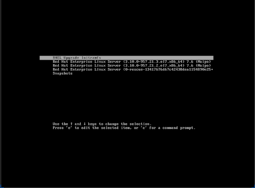
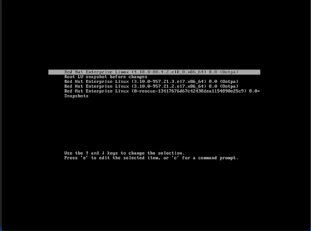

Managing storage devices
Deploying and configuring single-node storage in Red Hat Enterprise Linux 8
Abstract
Providing feedback on Red Hat documentation
We appreciate your input on our documentation. Please let us know how we could make it better. To do so:
For simple comments on specific passages:
- Make sure you are viewing the documentation in the Multi-page HTML format. In addition, ensure you see the Feedback button in the upper right corner of the document.
- Use your mouse cursor to highlight the part of text that you want to comment on.
- Click the Add Feedback pop-up that appears below the highlighted text.
- Follow the displayed instructions.
For submitting more complex feedback, create a Bugzilla ticket:
- Go to the Bugzilla website.
- As the Component, use Documentation.
- Fill in the Description field with your suggestion for improvement. Include a link to the relevant part(s) of documentation.
- Click Submit Bug.
Chapter 1. Overview of available storage options
This chapter describes the storage types that are available in Red Hat Enterprise Linux 8. Red Hat Enterprise Linux offers a variety of options for managing local storage, and for attaching to the remote storage. Figure 1.1, “High Level Red Hat Enterprise Linux Storage Diagram” describes the different storage options:
Figure 1.1. High Level Red Hat Enterprise Linux Storage Diagram
1.1. Local storage options
Following are the local storage options available in Red Hat Enterprise Linux 8:
Basic Disk Administration:
Using parted and fdisk, you can create, modify, delete, and view the partitions. Following are the partitioning layout standards:
- Master Boot Record (MBR): It is used with BIOS-based computers. You can create primary, extended, and logical partitions.
GUID Partition Table (GPT): It uses Globally Unique identifier (GUID) and provides unique disk and partition GUID.
To encrypt the partition, you can use Linux Unified Key Setup-on-disk-format (LUKS). To encrypt the partition, select the option during the installation and the prompt displays to enter the passphrase. This passphrase unlocks the encryption key.
Storage Consumption Options:
- Non-Volatile Dual In-line Memory Modules (NVDIMM) Management: It is a combination of memory and storage. You can enable and manage various types of storage on NVDIMM devices connected to your system.
- Block Storage Management: Data is stored in the form of blocks where each block has a unique identifier.
- File Storage: Data is stored at file level on the local system. These data can be accessed locally using XFS (default) or ext4, and over a network by using NFS and SMB.
Creating and Managing Logical Volumes:
Logical Volume Manager (LVM): It creates logical devices from physical devices. Logical volume (LV) is a combination of the physical volumes (PV) and volume groups (VG). Configuring LVM include:
- Creating PV from the hard drives.
- Creating VG from the PV.
- Creating LV from the VG assigning mount points to the LV.
Virtual Data Optimizer (VDO): It is used for data reduction by using deduplication, compression, and thin provisioning. Using LV below VDO helps in:
- Extending of VDO volume
- Spanning VDO volume over multiple devices
Local File System:
- XFS
- Ext4
- Stratis: It is available as a Technology Preview. Stratis is a hybrid user-and-kernel local storage management system that supports advanced storage features.
1.2. Remote storage options
Following are the remote storage options available in Red Hat Enterprise Linux 8:
Storage Connectivity Options:
- iSCSI: RHEL 8 uses the targetcli tool to add, remove, view, and monitor iSCSI storage interconnects.
Fibre Channel (FC): Red Hat Enterprise Linux 8 provides the following native Fibre Channel drivers:
-
lpfc -
qla2xxx -
Zfcp
-
Non-volatile Memory Express (
NVMe) is an interface which allows host software utility to communicate with solid state drives. Use the following types of fabric transport to configure NVMe over fabrics:- NVMe over fabrics using Remote Direct Memory Access (RDMA).
- NVMe over fabrics using Fibre Channel (FC)
- Device mapper multipathing (DM Multipath) allows you to configure multiple I/O paths between server nodes and storage arrays into a single device. These I/O paths are physical SAN connections that can include separate cables, switches, and controllers.
Network File system:
- NFS
- SMB
Chapter 2. Getting started with partitions
As a system administrator, you can use the following procedures to create, delete, and modify various types of disk partitions.
For an overview of the advantages and disadvantages to using partitions on block devices, see the following KBase article: https://access.redhat.com/solutions/163853.
2.1. Viewing the partition table
As a system administrator, you can display the partition table of a block device to see the partition layout and details about individual partitions.
2.1.1. Viewing the partition table with parted
This procedure describes how to view the partition table on a block device using the parted utility.
Procedure
Start the interactive
partedshell:# parted block-device-
Replace block-device with the path to the device you want to examine: for example,
/dev/sda.
-
Replace block-device with the path to the device you want to examine: for example,
View the partition table:
(parted) print
Optionally, use the following command to switch to another device you want to examine next:
(parted) select block-device
Additional resources
-
The
parted(8)man page.
2.1.2. Example output of parted print
This section provides an example output of the print command in the parted shell and describes fields in the output.
Example 2.1. Output of the print command
Model: ATA SAMSUNG MZNLN256 (scsi) Disk /dev/sda: 256GB Sector size (logical/physical): 512B/512B Partition Table: msdos Disk Flags: Number Start End Size Type File system Flags 1 1049kB 269MB 268MB primary xfs boot 2 269MB 34.6GB 34.4GB primary 3 34.6GB 45.4GB 10.7GB primary 4 45.4GB 256GB 211GB extended 5 45.4GB 256GB 211GB logical
Following is a description of the fields:
Model: ATA SAMSUNG MZNLN256 (scsi)- The disk type, manufacturer, model number, and interface.
Disk /dev/sda: 256GB- The file path to the block device and the storage capacity.
Partition Table: msdos- The disk label type.
Number-
The partition number. For example, the partition with minor number 1 corresponds to
/dev/sda1. StartandEnd- The location on the device where the partition starts and ends.
Type- Valid types are metadata, free, primary, extended, or logical.
File system-
The file system type. If the
File systemfield of a device shows no value, this means that its file system type is unknown. Thepartedutility cannot recognize the file system on encrypted devices. Flags-
Lists the flags set for the partition. Available flags are
boot,root,swap,hidden,raid,lvm, orlba.
2.2. Creating a partition table on a disk
As a system administrator, you can format a block device with different types of partition tables to enable using partitions on the device.
Formatting a block device with a partition table deletes all data stored on the device.
2.2.1. Considerations before modifying partitions on a disk
This section lists key points to consider before creating, removing, or resizing partitions.
This section does not cover the DASD partition table, which is specific to the IBM Z architecture. For information on DASD, see:
- Configuring a Linux instance on IBM Z
- The What you should know about DASD article at the IBM Knowledge Center
The maximum number of partitions
The number of partitions on a device is limited by the type of the partition table:
On a device formatted with the Master Boot Record (MBR) partition table, you can have either:
- Up to four primary partitions, or
- Up to three primary partitions, one extended partition, and multiple logical partitions within the extended.
-
On a device formatted with the GUID Partition Table (GPT), the maximum number of partitions is 128. While the GPT specification allows for more partitions by growing the area reserved for the partition table, common practice used by the
partedutility is to limit it to enough area for 128 partitions.
The maximum size of a partition
The size of a partition on a device is limited by the type of the partition table:
- On a device formatted with the Master Boot Record (MBR) partition table, the maximum size is 2TiB.
- On a device formatted with the GUID Partition Table (GPT), the maximum size is 8ZiB.
If you want to create a partition larger than 2TiB, the disk must be formatted with GPT.
Size alignment
The parted utility enables you to specify partition size using multiple different suffixes:
- MiB, GiB, or TiB
Size expressed in powers of 2.
- The starting point of the partition is aligned to the exact sector specified by size.
- The ending point is aligned to the specified size minus 1 sector.
- MB, GB, or TB
Size expressed in powers of 10.
The starting and ending point is aligned within one half of the specified unit: for example, ±500KB when using the MB suffix.
2.2.2. Comparison of partition table types
This section compares the properties of different types of partition tables that you can create on a block device.
Table 2.1. Partition table types
| Partition table | Maximum number of partitions | Maximum partition size |
|---|---|---|
| Master Boot Record (MBR) | 4 primary, or 3 primary and 12 logical inside an extended partition | 2TiB |
| GUID Partition Table (GPT) | 128 | 8ZiB |
2.2.3. Creating a partition table on a disk with parted
This procedure describes how to format a block device with a partition table using the parted utility.
Procedure
Start the interactive
partedshell:# parted block-device-
Replace block-device with the path to the device where you want to create a partition table: for example,
/dev/sda.
-
Replace block-device with the path to the device where you want to create a partition table: for example,
Determine if there already is a partition table on the device:
(parted) print
If the device already contains partitions, they will be deleted in the next steps.
Create the new partition table:
(parted) mklabel table-typeReplace table-type with with the intended partition table type:
-
msdosfor MBR -
gptfor GPT
-
Example 2.2. Creating a GPT table
For example, to create a GPT table on the disk, use:
(parted) mklabel gpt
The changes start taking place as soon as you enter this command, so review it before executing it.
View the partition table to confirm that the partition table exists:
(parted) print
Exit the
partedshell:(parted) quit
Additional resources
-
The
parted(8)man page.
Next steps
- Create partitions on the device. See Section 2.3, “Creating a partition” for details.
2.3. Creating a partition
As a system administrator, you can create new partitions on a disk.
2.3.1. Considerations before modifying partitions on a disk
This section lists key points to consider before creating, removing, or resizing partitions.
This section does not cover the DASD partition table, which is specific to the IBM Z architecture. For information on DASD, see:
- Configuring a Linux instance on IBM Z
- The What you should know about DASD article at the IBM Knowledge Center
The maximum number of partitions
The number of partitions on a device is limited by the type of the partition table:
On a device formatted with the Master Boot Record (MBR) partition table, you can have either:
- Up to four primary partitions, or
- Up to three primary partitions, one extended partition, and multiple logical partitions within the extended.
-
On a device formatted with the GUID Partition Table (GPT), the maximum number of partitions is 128. While the GPT specification allows for more partitions by growing the area reserved for the partition table, common practice used by the
partedutility is to limit it to enough area for 128 partitions.
The maximum size of a partition
The size of a partition on a device is limited by the type of the partition table:
- On a device formatted with the Master Boot Record (MBR) partition table, the maximum size is 2TiB.
- On a device formatted with the GUID Partition Table (GPT), the maximum size is 8ZiB.
If you want to create a partition larger than 2TiB, the disk must be formatted with GPT.
Size alignment
The parted utility enables you to specify partition size using multiple different suffixes:
- MiB, GiB, or TiB
Size expressed in powers of 2.
- The starting point of the partition is aligned to the exact sector specified by size.
- The ending point is aligned to the specified size minus 1 sector.
- MB, GB, or TB
Size expressed in powers of 10.
The starting and ending point is aligned within one half of the specified unit: for example, ±500KB when using the MB suffix.
2.3.2. Partition types
This section describes different attributes that specify the type of a partition.
Partition types or flags
The partition type, or flag, is used by a running system only rarely. However, the partition type matters to on-the-fly generators, such as systemd-gpt-auto-generator, which use the partition type to, for example, automatically identify and mount devices.
-
The
partedutility provides some control of partition types by mapping the partition type to flags. The parted utility can handle only certain partition types: for example LVM, swap, or RAID. -
The
fdiskutility supports the full range of partition types by specifying hexadecimal codes.
Partition file system type
The parted utility optionally accepts a file system type argument when creating a partition. The value is used to:
- Set the partition flags on MBR, or
-
Set the partition UUID type on GPT. For example, the
swap,fat, orhfsfile system types set different GUIDs. The default value is the Linux Data GUID.
The argument does not modify the file system on the partition in any way. It only differentiates between the supported flags or GUIDs.
The following file system types are supported:
-
xfs -
ext2 -
ext3 -
ext4 -
fat16 -
fat32 -
hfs -
hfs+ -
linux-swap -
ntfs -
reiserfs
2.3.3. Creating a partition with parted
This procedure describes how to create a new partition on a block device using the parted utility.
Prerequisites
- There is a partition table on the disk. For details on how to format the disk, see Section 2.2, “Creating a partition table on a disk”.
- If the partition you want to create is larger than 2TiB, the disk must be formatted with the GUID Partition Table (GPT).
Procedure
Start the interactive
partedshell:# parted block-device-
Replace block-device with the path to the device where you want to create a partition: for example,
/dev/sda.
-
Replace block-device with the path to the device where you want to create a partition: for example,
View the current partition table to determine if there is enough free space:
(parted) print
- If there is not enough free space, you can resize an existing partition. For more information, see Section 2.5, “Resizing a partition”.
From the partition table, determine:
- The start and end points of the new partition
- On MBR, what partition type it should be.
Create the new partition:
(parted) mkpart part-type name fs-type start end
-
Replace part-type with with
primary,logical, orextendedbased on what you decided from the partition table. This applies only to the MBR partition table. - Replace name with an arbitrary partition name. This is required for GPT partition tables.
-
Replace fs-type with any one of
xfs,ext2,ext3,ext4,fat16,fat32,hfs,hfs+,linux-swap,ntfs, orreiserfs. The fs-type parameter is optional. Note thatparteddoes not create the file system on the partition. -
Replace start and end with the sizes that determine the starting and ending points of the partition, counting from the beginning of the disk. You can use size suffixes, such as
512MiB,20GiB, or1.5TiB. The default size megabytes.
Example 2.3. Creating a small primary partition
For example, to create a primary partition from 1024MiB until 2048MiB on an MBR table, use:
(parted) mkpart primary 1024MiB 2048MiB
The changes start taking place as soon as you enter this command, so review it before executing it.
-
Replace part-type with with
View the partition table to confirm that the created partition is in the partition table with the correct partition type, file system type, and size:
(parted) print
Exit the
partedshell:(parted) quit
Use the following command to wait for the system to register the new device node:
# udevadm settle
Verify that the kernel recognizes the new partition:
# cat /proc/partitions
Additional resources
-
The
parted(8)man page.
2.3.4. Setting a partition type with fdisk
This procedure describes how to set a partition type, or flag, using the fdisk utility.
Prerequisites
- There is a partition on the disk.
Procedure
Start the interactive
fdiskshell:# fdisk block-device-
Replace block-device with the path to the device where you want to set a partition type: for example,
/dev/sda.
-
Replace block-device with the path to the device where you want to set a partition type: for example,
View the current partition table to determine the minor partition number:
Command (m for help): printYou can see the current partition type in the
Typecolumn and its corresponding type ID in theIdcolumn.Enter the partition type command and select a partition using its minor number:
Command (m for help): type Partition number (1,2,3 default 3): 2
Optionally, list the available hexadecimal codes:
Hex code (type L to list all codes): LSet the partition type:
Hex code (type L to list all codes): 8eWrite your changes and exit the
fdiskshell:Command (m for help): write The partition table has been altered. Syncing disks.Verify your changes:
# fdisk --list block-device
2.4. Removing a partition
As a system administrator, you can remove a disk partition that is no longer used to free up disk space.
Removing a partition deletes all data stored on the partition.
2.4.1. Considerations before modifying partitions on a disk
This section lists key points to consider before creating, removing, or resizing partitions.
This section does not cover the DASD partition table, which is specific to the IBM Z architecture. For information on DASD, see:
- Configuring a Linux instance on IBM Z
- The What you should know about DASD article at the IBM Knowledge Center
The maximum number of partitions
The number of partitions on a device is limited by the type of the partition table:
On a device formatted with the Master Boot Record (MBR) partition table, you can have either:
- Up to four primary partitions, or
- Up to three primary partitions, one extended partition, and multiple logical partitions within the extended.
-
On a device formatted with the GUID Partition Table (GPT), the maximum number of partitions is 128. While the GPT specification allows for more partitions by growing the area reserved for the partition table, common practice used by the
partedutility is to limit it to enough area for 128 partitions.
The maximum size of a partition
The size of a partition on a device is limited by the type of the partition table:
- On a device formatted with the Master Boot Record (MBR) partition table, the maximum size is 2TiB.
- On a device formatted with the GUID Partition Table (GPT), the maximum size is 8ZiB.
If you want to create a partition larger than 2TiB, the disk must be formatted with GPT.
Size alignment
The parted utility enables you to specify partition size using multiple different suffixes:
- MiB, GiB, or TiB
Size expressed in powers of 2.
- The starting point of the partition is aligned to the exact sector specified by size.
- The ending point is aligned to the specified size minus 1 sector.
- MB, GB, or TB
Size expressed in powers of 10.
The starting and ending point is aligned within one half of the specified unit: for example, ±500KB when using the MB suffix.
2.4.2. Removing a partition with parted
This procedure describes how to remove a disk partition using the parted utility.
Procedure
Start the interactive
partedshell:# parted block-device-
Replace block-device with the path to the device where you want to remove a partition: for example,
/dev/sda.
-
Replace block-device with the path to the device where you want to remove a partition: for example,
View the current partition table to determine the minor number of the partition to remove:
(parted) print
Remove the partition:
(parted) rm minor-number-
Replace minor-number with the minor number of the partition you want to remove: for example,
3.
The changes start taking place as soon as you enter this command, so review it before executing it.
-
Replace minor-number with the minor number of the partition you want to remove: for example,
Confirm that the partition is removed from the partition table:
(parted) print
Exit the
partedshell:(parted) quit
Verify that the kernel knows the partition is removed:
# cat /proc/partitions
-
Remove the partition from the
/etc/fstabfile if it is present. Find the line that declares the removed partition, and remove it from the file. Regenerate mount units so that your system registers the new
/etc/fstabconfiguration:# systemctl daemon-reload
If you have deleted a swap partition or removed pieces of LVM, remove all references to the partition from the kernel command line in the
/etc/default/grubfile and regenerate GRUB configuration:On a BIOS-based system:
# grub2-mkconfig --output=/etc/grub2.cfg
On a UEFI-based system:
# grub2-mkconfig --output=/etc/grub2-efi.cfg
To register the changes in the early boot system, rebuild the
initramfsfile system:# dracut --force --verbose
Additional resources
-
The
parted(8)man page
2.5. Resizing a partition
As a system administrator, you can extend a partition to utilize unused disk space, or shrink a partition to use its capacity for different purposes.
2.5.1. Considerations before modifying partitions on a disk
This section lists key points to consider before creating, removing, or resizing partitions.
This section does not cover the DASD partition table, which is specific to the IBM Z architecture. For information on DASD, see:
- Configuring a Linux instance on IBM Z
- The What you should know about DASD article at the IBM Knowledge Center
The maximum number of partitions
The number of partitions on a device is limited by the type of the partition table:
On a device formatted with the Master Boot Record (MBR) partition table, you can have either:
- Up to four primary partitions, or
- Up to three primary partitions, one extended partition, and multiple logical partitions within the extended.
-
On a device formatted with the GUID Partition Table (GPT), the maximum number of partitions is 128. While the GPT specification allows for more partitions by growing the area reserved for the partition table, common practice used by the
partedutility is to limit it to enough area for 128 partitions.
The maximum size of a partition
The size of a partition on a device is limited by the type of the partition table:
- On a device formatted with the Master Boot Record (MBR) partition table, the maximum size is 2TiB.
- On a device formatted with the GUID Partition Table (GPT), the maximum size is 8ZiB.
If you want to create a partition larger than 2TiB, the disk must be formatted with GPT.
Size alignment
The parted utility enables you to specify partition size using multiple different suffixes:
- MiB, GiB, or TiB
Size expressed in powers of 2.
- The starting point of the partition is aligned to the exact sector specified by size.
- The ending point is aligned to the specified size minus 1 sector.
- MB, GB, or TB
Size expressed in powers of 10.
The starting and ending point is aligned within one half of the specified unit: for example, ±500KB when using the MB suffix.
2.5.2. Resizing a partition with parted
This procedure resizes a disk partition using the parted utility.
Prerequisites
If you want to shrink a partition, back up the data that are stored on it.
WarningShrinking a partition might result in data loss on the partition.
- If you want to resize a partition to be larger than 2TiB, the disk must be formatted with the GUID Partition Table (GPT). For details on how to format the disk, see Section 2.2, “Creating a partition table on a disk”.
Procedure
- If you want to shrink the partition, shrink the file system on it first so that it is not larger than the resized partition. Note that XFS does not support shrinking.
Start the interactive
partedshell:# parted block-device-
Replace block-device with the path to the device where you want to resize a partition: for example,
/dev/sda.
-
Replace block-device with the path to the device where you want to resize a partition: for example,
View the current partition table:
(parted) print
From the partition table, determine:
- The minor number of the partition
- The location of the existing partition and its new ending point after resizing
Resize the partition:
(parted) resizepart minor-number new-end
-
Replace minor-number with the minor number of the partition that you are resizing: for example,
3. -
Replace new-end with the size that determines the new ending point of the resized partition, counting from the beginning of the disk. You can use size suffixes, such as
512MiB,20GiB, or1.5TiB. The default size megabytes.
Example 2.4. Extending a partition
For example, to extend a partition located at the beginning of the disk to be 2GiB in size, use:
(parted) resizepart 1 2GiB
The changes start taking place as soon as you enter this command, so review it before executing it.
-
Replace minor-number with the minor number of the partition that you are resizing: for example,
View the partition table to confirm that the resized partition is in the partition table with the correct size:
(parted) print
Exit the
partedshell:(parted) quit
Verify that the kernel recognizes the new partition:
# cat /proc/partitions
- If you extended the partition, extend the file system on it as well. See (reference) for details.
Additional resources
-
The
parted(8)man page.
Chapter 3. Overview of persistent naming attributes
As a system administrator, you need to refer to storage volumes using persistent naming attributes to build storage setups that are reliable over multiple system boots.
3.1. Disadvantages of non-persistent naming attributes
Red Hat Enterprise Linux provides a number of ways to identify storage devices. It is important to use the correct option to identify each device when used in order to avoid inadvertently accessing the wrong device, particularly when installing to or reformatting drives.
Traditionally, non-persistent names in the form of /dev/sd(major number)(minor number) are used on Linux to refer to storage devices. The major and minor number range and associated sd names are allocated for each device when it is detected. This means that the association between the major and minor number range and associated sd names can change if the order of device detection changes.
Such a change in the ordering might occur in the following situations:
- The parallelization of the system boot process detects storage devices in a different order with each system boot.
-
A disk fails to power up or respond to the SCSI controller. This results in it not being detected by the normal device probe. The disk is not accessible to the system and subsequent devices will have their major and minor number range, including the associated
sdnames shifted down. For example, if a disk normally referred to assdbis not detected, a disk that is normally referred to assdcwould instead appear assdb. -
A SCSI controller (host bus adapter, or HBA) fails to initialize, causing all disks connected to that HBA to not be detected. Any disks connected to subsequently probed HBAs are assigned different major and minor number ranges, and different associated
sdnames. - The order of driver initialization changes if different types of HBAs are present in the system. This causes the disks connected to those HBAs to be detected in a different order. This might also occur if HBAs are moved to different PCI slots on the system.
-
Disks connected to the system with Fibre Channel, iSCSI, or FCoE adapters might be inaccessible at the time the storage devices are probed, due to a storage array or intervening switch being powered off, for example. This might occur when a system reboots after a power failure, if the storage array takes longer to come online than the system take to boot. Although some Fibre Channel drivers support a mechanism to specify a persistent SCSI target ID to WWPN mapping, this does not cause the major and minor number ranges, and the associated
sdnames to be reserved; it only provides consistent SCSI target ID numbers.
These reasons make it undesirable to use the major and minor number range or the associated sd names when referring to devices, such as in the /etc/fstab file. There is the possibility that the wrong device will be mounted and data corruption might result.
Occasionally, however, it is still necessary to refer to the sd names even when another mechanism is used, such as when errors are reported by a device. This is because the Linux kernel uses sd names (and also SCSI host/channel/target/LUN tuples) in kernel messages regarding the device.
3.2. File system and device identifiers
This sections explains the difference between persistent attributes identifying file systems and block devices.
File system identifiers
File system identifiers are tied to a particular file system created on a block device. The identifier is also stored as part of the file system. If you copy the file system to a different device, it still carries the same file system identifier. On the other hand, if you rewrite the device, such as by formatting it with the mkfs utility, the device loses the attribute.
File system identifiers include:
- Unique identifier (UUID)
- Label
Device identifiers
Device identifiers are tied to a block device: for example, a disk or a partition. If you rewrite the device, such as by formatting it with the mkfs utility, the device keeps the attribute, because it is not stored in the file system.
Device identifiers include:
- World Wide Identifier (WWID)
- Partition UUID
- Serial number
Recommendations
- Some file systems, such as logical volumes, span multiple devices. Red Hat recommends accessing these file systems using file system identifiers rather than device identifiers.
3.3. Device names managed by the udev mechanism in /dev/disk/
This section lists different kinds of persistent naming attributes that the udev service provides in the /dev/disk/ directory.
The udev mechanism is used for all types of devices in Linux, not just for storage devices. In the case of storage devices, Red Hat Enterprise Linux contains udev rules that create symbolic links in the /dev/disk/ directory. This enables you to refer to storage devices by:
- Their content
- A unique identifier
- Their serial number.
Although udev naming attributes are persistent, in that they do not change on their own across system reboots, some are also configurable.
3.3.1. File system identifiers
The UUID attribute in /dev/disk/by-uuid/
Entries in this directory provide a symbolic name that refers to the storage device by a unique identifier (UUID) in the content (that is, the data) stored on the device. For example:
/dev/disk/by-uuid/3e6be9de-8139-11d1-9106-a43f08d823a6
You can use the UUID to refer to the device in the /etc/fstab file using the following syntax:
UUID=3e6be9de-8139-11d1-9106-a43f08d823a6You can configure the UUID attribute when creating a file system, and you can also change it later on.
The Label attribute in /dev/disk/by-label/
Entries in this directory provide a symbolic name that refers to the storage device by a label in the content (that is, the data) stored on the device.
For example:
/dev/disk/by-label/Boot
You can use the label to refer to the device in the /etc/fstab file using the following syntax:
LABEL=BootYou can configure the Label attribute when creating a file system, and you can also change it later on.
3.3.2. Device identifiers
The WWID attribute in /dev/disk/by-id/
The World Wide Identifier (WWID) is a persistent, system-independent identifier that the SCSI Standard requires from all SCSI devices. The WWID identifier is guaranteed to be unique for every storage device, and independent of the path that is used to access the device. The identifier is a property of the device but is not stored in the content (that is, the data) on the devices.
This identifier can be obtained by issuing a SCSI Inquiry to retrieve the Device Identification Vital Product Data (page 0x83) or Unit Serial Number (page 0x80).
Red Hat Enterprise Linux automatically maintains the proper mapping from the WWID-based device name to a current /dev/sd name on that system. Applications can use the /dev/disk/by-id/ name to reference the data on the disk, even if the path to the device changes, and even when accessing the device from different systems.
Example 3.1. WWID mappings
| WWID symlink | Non-persistent device | Note |
|---|---|---|
|
|
|
A device with a page |
|
|
|
A device with a page |
|
|
| A disk partition |
In addition to these persistent names provided by the system, you can also use udev rules to implement persistent names of your own, mapped to the WWID of the storage.
The Partition UUID attribute in /dev/disk/by-partuuid
The Partition UUID (PARTUUID) attribute identifies partitions as defined by GPT partition table.
Example 3.2. Partition UUID mappings
| PARTUUID symlink | Non-persistent device |
|---|---|
|
|
|
|
|
|
|
|
|
The Path attribute in /dev/disk/by-path/
This attribute provides a symbolic name that refers to the storage device by the hardware path used to access the device.
The Path attribute is unreliable, and Red Hat does not recommend using it.
3.4. The World Wide Identifier with DM Multipath
This section describes the mapping between the World Wide Identifier (WWID) and non-persistent device names in a Device Mapper Multipath configuration.
If there are multiple paths from a system to a device, DM Multipath uses the WWID to detect this. DM Multipath then presents a single "pseudo-device" in the /dev/mapper/wwid directory, such as /dev/mapper/3600508b400105df70000e00000ac0000.
The command multipath -l shows the mapping to the non-persistent identifiers:
-
Host:Channel:Target:LUN -
/dev/sdname -
major:minornumber
Example 3.3. WWID mappings in a multipath configuration
An example output of the multipath -l command:
3600508b400105df70000e00000ac0000 dm-2 vendor,product [size=20G][features=1 queue_if_no_path][hwhandler=0][rw] \_ round-robin 0 [prio=0][active] \_ 5:0:1:1 sdc 8:32 [active][undef] \_ 6:0:1:1 sdg 8:96 [active][undef] \_ round-robin 0 [prio=0][enabled] \_ 5:0:0:1 sdb 8:16 [active][undef] \_ 6:0:0:1 sdf 8:80 [active][undef]
DM Multipath automatically maintains the proper mapping of each WWID-based device name to its corresponding /dev/sd name on the system. These names are persistent across path changes, and they are consistent when accessing the device from different systems.
When the user_friendly_names feature of DM Multipath is used, the WWID is mapped to a name of the form /dev/mapper/mpathN. By default, this mapping is maintained in the file /etc/multipath/bindings. These mpathN names are persistent as long as that file is maintained.
If you use user_friendly_names, then additional steps are required to obtain consistent names in a cluster.
3.5. Limitations of the udev device naming convention
The following are some limitations of the udev naming convention:
-
It is possible that the device might not be accessible at the time the query is performed because the
udevmechanism might rely on the ability to query the storage device when theudevrules are processed for audevevent. This is more likely to occur with Fibre Channel, iSCSI or FCoE storage devices when the device is not located in the server chassis. -
The kernel might send
udevevents at any time, causing the rules to be processed and possibly causing the/dev/disk/by-*/links to be removed if the device is not accessible. -
There might be a delay between when the
udevevent is generated and when it is processed, such as when a large number of devices are detected and the user-spaceudevdservice takes some amount of time to process the rules for each one. This might cause a delay between when the kernel detects the device and when the/dev/disk/by-*/names are available. -
External programs such as
blkidinvoked by the rules might open the device for a brief period of time, making the device inaccessible for other uses.
3.6. Listing persistent naming attributes
This procedure describes how to find out the persistent naming attributes of non-persistent storage devices.
Procedure
To list the UUID and Label attributes, use the
lsblkutility:$ lsblk --fs storage-deviceFor example:
Example 3.4. Viewing the UUID and Label of a file system
$ lsblk --fs /dev/sda1 NAME FSTYPE LABEL UUID MOUNTPOINT sda1 xfs Boot afa5d5e3-9050-48c3-acc1-bb30095f3dc4 /boot
To list the PARTUUID attribute, use the
lsblkutility with the--output +PARTUUIDoption:$ lsblk --output +PARTUUID
For example:
Example 3.5. Viewing the PARTUUID attribute of a partition
$ lsblk --output +PARTUUID /dev/sda1 NAME MAJ:MIN RM SIZE RO TYPE MOUNTPOINT PARTUUID sda1 8:1 0 512M 0 part /boot 4cd1448a-01
To list the WWID attribute, examine the targets of symbolic links in the
/dev/disk/by-id/directory. For example:Example 3.6. Viewing the WWID of all storage devices on the system
$ file /dev/disk/by-id/* /dev/disk/by-id/ata-QEMU_HARDDISK_QM00001 symbolic link to ../../sda /dev/disk/by-id/ata-QEMU_HARDDISK_QM00001-part1 symbolic link to ../../sda1 /dev/disk/by-id/ata-QEMU_HARDDISK_QM00001-part2 symbolic link to ../../sda2 /dev/disk/by-id/dm-name-rhel_rhel8-root symbolic link to ../../dm-0 /dev/disk/by-id/dm-name-rhel_rhel8-swap symbolic link to ../../dm-1 /dev/disk/by-id/dm-uuid-LVM-QIWtEHtXGobe5bewlIUDivKOz5ofkgFhP0RMFsNyySVihqEl2cWWbR7MjXJolD6g symbolic link to ../../dm-1 /dev/disk/by-id/dm-uuid-LVM-QIWtEHtXGobe5bewlIUDivKOz5ofkgFhXqH2M45hD2H9nAf2qfWSrlRLhzfMyOKd symbolic link to ../../dm-0 /dev/disk/by-id/lvm-pv-uuid-atlr2Y-vuMo-ueoH-CpMG-4JuH-AhEF-wu4QQm symbolic link to ../../sda2
3.7. Modifying persistent naming attributes
This procedure describes how to change the UUID or Label persistent naming attribute of a file system.
Changing udev attributes happens in the background and might take a long time. The udevadm settle command waits until the change is fully registered, which ensures that your next command will be able to utilize the new attribute correctly.
In the following commands:
-
Replace new-uuid with the UUID you want to set; for example,
1cdfbc07-1c90-4984-b5ec-f61943f5ea50. You can generate a UUID using theuuidgencommand. -
Replace new-label with a label; for example,
backup_data.
Prerequisites
- If you are modifying the attributes of an XFS file system, unmount it first.
Procedure
To change the UUID or Label attributes of an XFS file system, use the
xfs_adminutility:# xfs_admin -U new-uuid -L new-label storage-device # udevadm settle
To change the UUID or Label attributes of an ext4, ext3, or ext2 file system, use the
tune2fsutility:# tune2fs -U new-uuid -L new-label storage-device # udevadm settle
To change the UUID or Label attributes of a swap volume, use the
swaplabelutility:# swaplabel --uuid new-uuid --label new-label swap-device # udevadm settle
Chapter 4. Using NVDIMM persistent memory storage
As a system administrator, you can enable and manage various types of storage on Non-Volatile Dual In-line Memory Modules (NVDIMM) devices connected to your system.
For installing Red Hat Enterprise Linux 8 on NVDIMM storage, see Installing to an NVDIMM device instead.
4.1. The NVDIMM persistent memory technology
NVDIMM persistent memory, also called storage class memory or pmem, is a combination of memory and storage.
NVDIMM combines the durability of storage with the low access latency and the high bandwidth of dynamic RAM (DRAM):
-
NVDIMM storage is byte-addressable, so it can be accessed by using the CPU load and store instructions. In addition to the
read()andwrite()system calls, which are required for accessing traditional block-based storage, NVDIMM also supports direct load and store programming model. - The performance characteristics of NVDIMM are similar to DRAM with very low access latency, typically in the tens to hundreds of nanoseconds.
- Data stored on NVDIMM are preserved when the power is off, like with storage.
- The direct access (DAX) technology enables applications to memory map storage directly, without going through the system page cache. This frees up DRAM for other purposes.
NVDIMM is beneficial in use cases such as:
- Databases
- The reduced storage access latency on NVDIMM can dramatically improve database performance.
- Rapid restart
Rapid restart is also called the warm cache effect. For example, a file server has none of the file contents in memory after starting. As clients connect and read or write data, that data is cached in the page cache. Eventually, the cache contains mostly hot data. After a reboot, the system must start the process again on traditional storage.
NVDIMM enables an application to keep the warm cache across reboots if the application is designed properly. In this example, there would be no page cache involved: the application would cache data directly in the persistent memory.
- Fast write-cache
- File servers often do not acknowledge a client’s write request until the data is on durable media. Using NVDIMM as a fast write cache enables a file server to acknowledge the write request quickly thanks to the low latency.
4.2. NVDIMM interleaving and regions
NVDIMM devices support grouping into interleaved regions.
NVDIMM devices can be grouped into interleave sets in the same way as regular DRAM. An interleave set is similar to a RAID 0 level (stripe) configuration across multiple DIMMs. An Interleave set is also called a region.
Interleaving has the following advantages:
- NVDIMM devices benefit from increased performance when they are configured into interleave sets.
- Interleaving can combine multiple smaller NVDIMM devices into a larger logical device.
NVDIMM interleave sets are configured in the system BIOS or UEFI firmware.
Red Hat Enterprise Linux creates one region device for each interleave set.
4.3. NVDIMM namespaces
NVDIMM regions are divided into one or more namespaces. Namespaces enable you to access the device using different methods, based on the type of the namespace.
Some NVDIMM devices do not support multiple namespaces on a region:
- If your NVDIMM device supports labels, you can subdivide the region into namespaces.
- If your NVDIMM device does not support labels, the region can only contain a single namespace. In that case, Red Hat Enterprise Linux creates a default namespace that covers the entire region.
4.4. NVDIMM access modes
You can configure NVDIMM namespaces to use either of the following modes:
sectorPresents the storage as a fast block device. This mode is useful for legacy applications that have not been modified to use NVDIMM storage, or for applications that make use of the full I/O stack, including Device Mapper.
A
sectordevice can be used in the same way as any other block device on the system. You can create partitions or file systems on it, configure it as part of a software RAID set, or use it as the cache device fordm-cache.Devices in this mode are available at
/dev/pmemNs. See theblockdevvalue listed after creating the namespace.devdax, or device direct access (DAX)Enables NVDIMM devices to support direct access programming as described in the Storage Networking Industry Association (SNIA) Non-Volatile Memory (NVM) Programming Model specification. In this mode, I/O bypasses the storage stack of the kernel. Therefore, no Device Mapper drivers can be used.
Device DAX provides raw access to NVDIMM storage by using a DAX character device node. Data on a
devdaxdevice can be made durable using CPU cache flushing and fencing instructions. Certain databases and virtual machine hypervisors might benefit from this mode. File systems cannot be created ondevdaxdevices.Devices in this mode are available at
/dev/daxN.M. See thechardevvalue listed after creating the namespace.fsdax, or file system direct access (DAX)Enables NVDIMM devices to support direct access programming as described in the Storage Networking Industry Association (SNIA) Non-Volatile Memory (NVM) Programming Model specification. In this mode, I/O bypasses the storage stack of the kernel, and many Device Mapper drivers therefore cannot be used.
You can create file systems on file system DAX devices.
Devices in this mode are available at
/dev/pmemN. See theblockdevvalue listed after creating the namespace.ImportantThe file system DAX technology is provided only as a Technology Preview, and is not supported by Red Hat.
rawPresents a memory disk that does not support DAX. In this mode, namespaces have several limitations and should not be used.
Devices in this mode are available at
/dev/pmemN. See theblockdevvalue listed after creating the namespace.
4.5. Creating a sector namespace on an NVDIMM to act as a block device
You can configure an NVDIMM device in sector mode, which is also called legacy mode, to support traditional, block-based storage.
You can either:
- reconfigure an existing namespace to sector mode, or
- create a new sector namespace if there is available space.
Prerequisites
- An NVDIMM device is attached to your system.
4.5.1. Installing ndctl
This procedure installs the ndctl utility, which is used to configure and monitor NVDIMM devices.
Procedure
To install the
ndctlutility, use the following command:# yum install ndctl
4.5.2. Reconfiguring an existing NVDIMM namespace to sector mode
This procedure reconfigures an NVDIMM namespace to sector mode for use as a fast block device.
Reconfiguring a namespace deletes all data previously stored on the namespace.
Prerequisites
-
The
ndctlutility is installed. See Section 4.5.1, “Installing ndctl”.
Procedure
Reconfigure the selected namespace to sector mode:
# ndctl create-namespace \ --force \ --reconfig=namespace-ID \ --mode=sectorExample 4.1. Reconfiguring namespace1.0 in sector mode
To reconfigure the
namespace1.0namespace to usesectormode:# ndctl create-namespace \ --force \ --reconfig=namespace1.0 \ --mode=sector { "dev":"namespace1.0", "mode":"sector", "size":"11.99 GiB (12.87 GB)", "uuid":"5805480e-90e6-407e-96a4-23e1cde2ed78", "raw_uuid":"879d9e9f-fd43-4ed5-b64f-3bcd0781391a", "sector_size":4096, "blockdev":"pmem1s", "numa_node":1 }-
The reconfigured namespace is now available under the
/devdirectory as/dev/pmemNs.
Additional resources
-
The
ndctl-create-namespace(1)man page
4.5.3. Creating a new NVDIMM namespace in sector mode
This procedure creates a new sector namespace on an NVDIMM device, enabling you to use it as a traditional block device.
Prerequisites
-
The
ndctlutility is installed. See Section 4.5.1, “Installing ndctl”. - The NVDIMM device supports labels.
Procedure
List the
pmemregions on your system that have available space. In the following example, space is available in theregion5andregion4regions:# ndctl list --regions [ { "dev":"region5", "size":270582939648, "available_size":270582939648, "type":"pmem", "iset_id":-7337419320239190016 }, { "dev":"region4", "size":270582939648, "available_size":270582939648, "type":"pmem", "iset_id":-137289417188962304 } ]On any of the available regions, allocate one or more namespaces:
# ndctl create-namespace \ --mode=sector \ --region=regionN \ --size=namespace-sizeExample 4.2. Creating a namespace on a region
The following command creates a 36-GiB sector namespace on
region4:# ndctl create-namespace \ --mode=sector \ --region=region4 \ --size=36G-
The new namespace is now available under the
/devdirectory as/dev/pmemNs.
Additional resources
-
The
ndctl-create-namespace(1)man page
4.6. Creating a device DAX namespace on an NVDIMM
You can configure an NVDIMM device in device DAX mode to support character storage with direct access capabilities.
You can either:
- reconfigure an existing namespace to device DAX mode, or
- create a new device DAX namespace if there is available space.
Prerequisites
- An NVDIMM device is attached to your system.
4.6.1. NVDIMM in device direct access mode
Device direct access (device DAX, devdax) provides a means for applications to directly access storage, without the involvement of a file system. The benefit of device DAX is that it provides a guaranteed fault granularity, which can be configured using the --align option of the ndctl utility
For the Intel 64 and AMD64 architecture, the following fault granularities are supported:
- 4 KiB
- 2 MiB
- 1 GiB
Device DAX nodes support only the following system calls:
-
open() -
close() -
mmap()
The read() and write() variants are not supported because the device DAX use case is tied to persistent memory programming.
4.6.2. Installing ndctl
This procedure installs the ndctl utility, which is used to configure and monitor NVDIMM devices.
Procedure
To install the
ndctlutility, use the following command:# yum install ndctl
4.6.3. Reconfiguring an existing NVDIMM namespace to device DAX mode
This procedure reconfigures a namespace on an NVDIMM device to device DAX mode, and enables you to store data on the namespace.
Reconfiguring a namespace deletes all data previously stored on the namespace.
Prerequisites
-
The
ndctlutility is installed. See Section 4.6.2, “Installing ndctl”.
Procedure
List all namespaces on your system:
# ndctl list --namespaces --idle [ { "dev":"namespace1.0", "mode":"raw", "size":34359738368, "state":"disabled", "numa_node":1 }, { "dev":"namespace0.0", "mode":"raw", "size":34359738368, "state":"disabled", "numa_node":0 } ]Reconfigure any namespace:
# ndctl create-namespace \ --force \ --mode=devdax \ --reconfig=namespace-IDExample 4.3. Reconfiguring a namespace as device DAX
The following command reconfigures
namespace0.0for data storage that supports DAX. It is aligned to a 2-MiB fault granularity to ensure that the operating system faults in 2-MiB pages at a time:# ndctl create-namespace \ --force \ --mode=devdax \ --align=2M \ --reconfig=namespace0.0-
The namespace is now available at the
/dev/daxN.Mpath.
Additional resources
-
The
ndctl-create-namespace(1)man page
4.6.4. Creating a new NVDIMM namespace in device DAX mode
This procedure creates a new device DAX namespace on an NVDIMM device, enabling you to store data on the namespace.
Prerequisites
-
The
ndctlutility is installed. See Section 4.6.2, “Installing ndctl”. - The NVDIMM device supports labels.
Procedure
List the
pmemregions on your system that have available space. In the following example, space is available in theregion5andregion4regions:# ndctl list --regions [ { "dev":"region5", "size":270582939648, "available_size":270582939648, "type":"pmem", "iset_id":-7337419320239190016 }, { "dev":"region4", "size":270582939648, "available_size":270582939648, "type":"pmem", "iset_id":-137289417188962304 } ]On any of the available regions, allocate one or more namespaces:
# ndctl create-namespace \ --mode=devdax \ --region=regionN \ --size=namespace-sizeExample 4.4. Creating a namespace on a region
The following command creates a 36-GiB device DAX namespace on
region4. It is aligned to a 2-MiB fault granularity to ensure that the operating system faults in 2-MiB pages at a time:# ndctl create-namespace \ --mode=devdax \ --region=region4 \ --align=2M \ --size=36G { "dev":"namespace1.2", "mode":"devdax", "map":"dev", "size":"35.44 GiB (38.05 GB)", "uuid":"5ae01b9c-1ebf-4fb6-bc0c-6085f73d31ee", "raw_uuid":"4c8be2b0-0842-4bcb-8a26-4bbd3b44add2", "daxregion":{ "id":1, "size":"35.44 GiB (38.05 GB)", "align":2097152, "devices":[ { "chardev":"dax1.2", "size":"35.44 GiB (38.05 GB)" } ] }, "numa_node":1 }-
The namespace is now available at the
/dev/daxN.Mpath.
Additional resources
-
The
ndctl-create-namespace(1)man page
4.7. Creating a file system DAX namespace on an NVDIMM
You can configure an NVDIMM device in file system DAX mode to support a file system with direct access capabilities.
You can either:
- reconfigure an existing namespace to file system DAX mode, or
- create a new file system DAX namespace if there is available space.
The file system DAX technology is provided only as a Technology Preview, and is not supported by Red Hat.
Prerequisites
- An NVDIMM device is attached to your system.
4.7.1. NVDIMM in file system direct access mode
When an NVDIMM device is configured in file system direct access (file system DAX, fsdax) mode, a file system can be created on top of it.
Any application that performs an mmap() operation on a file on this file system gets direct access to its storage. This enables the direct access programming model on NVDIMM. The file system must be mounted with the -o dax option in order for direct mapping to happen.
Per-page metadata allocation
This mode requires allocating per-page metadata in the system DRAM or on the NVDIMM device itself. The overhead of this data structure is 64 bytes per each 4-KiB page:
- On small devices, the amount of overhead is small enough to fit in DRAM with no problems. For example, a 16-GiB namespace only requires 256 MiB for page structures. Because NVDIMM devices are usually small and expensive, storing the page tracking data structures in DRAM is preferable.
- On NVDIMM devices that are be terabytes in size or larger, the amount of memory required to store the page tracking data structures might exceed the amount of DRAM in the system. One TiB of NVDIMM requires 16 GiB just for page structures. As a result, storing the data structures on the NVDIMM itself is preferable in such cases.
You can configure where per-page metadata are stored using the --map option when configuring a namespace:
-
To allocate in the system RAM, use
--map=mem. -
To allocate on the NVDIMM, use
--map=dev.
Partitions and file systems on fsdax
When creating partitions on an fsdax device, partitions must be aligned on page boundaries. On the Intel 64 and AMD64 architecture, at least 4 KiB alignment is required for the start and end of the partition. 2 MiB is the preferred alignment.
On Red Hat Enterprise Linux 8, both the XFS and ext4 file system can be created on NVDIMM as a Technology Preview.
4.7.2. Installing ndctl
This procedure installs the ndctl utility, which is used to configure and monitor NVDIMM devices.
Procedure
To install the
ndctlutility, use the following command:# yum install ndctl
4.7.3. Reconfiguring an existing NVDIMM namespace to file system DAX mode
This procedure reconfigures a namespace on an NVDIMM device to file system DAX mode, and enables you to store files on the namespace.
Reconfiguring a namespace deletes all data previously stored on the namespace.
Prerequisites
-
The
ndctlutility is installed. See Section 4.7.2, “Installing ndctl”.
Procedure
List all namespaces on your system:
# ndctl list --namespaces --idle [ { "dev":"namespace1.0", "mode":"raw", "size":34359738368, "state":"disabled", "numa_node":1 }, { "dev":"namespace0.0", "mode":"raw", "size":34359738368, "state":"disabled", "numa_node":0 } ]Reconfigure any namespace:
# ndctl create-namespace \ --force \ --mode=fsdax \ --reconfig=namespace-IDExample 4.5. Reconfiguring a namespace as file system DAX
To use
namespace0.0for a file system that supports DAX, use the following command:# ndctl create-namespace \ --force \ --mode=fsdax \ --reconfig=namespace0.0 { "dev":"namespace0.0", "mode":"fsdax", "size":"32.00 GiB (34.36 GB)", "uuid":"ab91cc8f-4c3e-482e-a86f-78d177ac655d", "blockdev":"pmem0", "numa_node":0 }-
The namespace is now available at the
/dev/pmemNpath.
Additional resources
-
The
ndctl-create-namespace(1)man page
4.7.4. Creating a new NVDIMM namespace in file system DAX mode
This procedure creates a new file system DAX namespace on an NVDIMM device, enabling you to store files on the namespace.
Prerequisites
-
The
ndctlutility is installed. See Section 4.7.2, “Installing ndctl”. - The NVDIMM device supports labels.
Procedure
List the
pmemregions on your system that have available space. In the following example, space is available in theregion5andregion4regions:# ndctl list --regions [ { "dev":"region5", "size":270582939648, "available_size":270582939648, "type":"pmem", "iset_id":-7337419320239190016 }, { "dev":"region4", "size":270582939648, "available_size":270582939648, "type":"pmem", "iset_id":-137289417188962304 } ]On any of the available regions, allocate one or more namespaces:
# ndctl create-namespace \ --mode=fsdax \ --region=regionN \ --size=namespace-sizeExample 4.6. Creating a namespace on a region
The following command creates a 36-GiB file system DAX namespace on
region4:# ndctl create-namespace \ --mode=fsdax \ --region=region4 \ --size=36G { "dev":"namespace4.0", "mode":"fsdax", "size":"35.44 GiB (38.05 GB)", "uuid":"9c5330b5-dc90-4f7a-bccd-5b558fa881fe", "blockdev":"pmem4", "numa_node":0 }-
The namespace is now available at the
/dev/pmemNpath.
Additional resources
-
The
ndctl-create-namespace(1)man page
4.7.5. Creating a file system on a file system DAX device
This procedure creates a file system on a file system DAX device and mounts the file system.
Procedure
Optionally, create a partition on the file system DAX device. See Section 2.3, “Creating a partition”.
By default, the
partedtool aligns partitions on 1 MiB boundaries. For the first partition, specify 2 MiB as the start of the partition. If the size of the partition is a multiple of 2 MiB, all other partitions are also aligned.Create an XFS or ext4 file system on the partition or the NVDIMM device.
For XFS, disable shared copy-on-write data extents when creating the file system:
# mkfs.xfs -m reflink=0 fsdax-partition-or-deviceMount the file system with the
-o fsdaxmount option:# mount -o fsdax fsdax-partition-or-device mount-point
-
Applications can now use persistent memory and create files in the mount-point directory, open the files, and use the
mmapoperation to map the files for direct access.
Additional resources
-
The
mkfs.xfs(8)man page
4.8. Troubleshooting NVDIMM persistent memory
You can detect and fix different kinds of errors on NVDIMM devices.
Prerequisites
- An NVDIMM device is connected to your system and configured.
4.8.1. Installing ndctl
This procedure installs the ndctl utility, which is used to configure and monitor NVDIMM devices.
Procedure
To install the
ndctlutility, use the following command:# yum install ndctl
4.8.2. Monitoring NVDIMM health using S.M.A.R.T.
Some NVDIMM devices support Self-Monitoring, Analysis and Reporting Technology (S.M.A.R.T.) interfaces for retrieving health information.
Monitor NVDIMM health regularly to prevent data loss. If S.M.A.R.T. reports problems with the health status of an NVDIMM device, replace it as described in Section 4.8.3, “Detecting and replacing a broken NVDIMM device”.
Prerequisites
On some systems, the
acpi_ipmidriver must be loaded to retrieve health information using the following command:# modprobe acpi_ipmi
Procedure
To access the health information, use the following command:
# ndctl list --dimms --health ... { "dev":"nmem0", "id":"802c-01-1513-b3009166", "handle":1, "phys_id":22, "health": { "health_state":"ok", "temperature_celsius":25.000000, "spares_percentage":99, "alarm_temperature":false, "alarm_spares":false, "temperature_threshold":50.000000, "spares_threshold":20, "life_used_percentage":1, "shutdown_state":"clean" } } ...
Additional resources
-
The
ndctl-list(1)man page
4.8.3. Detecting and replacing a broken NVDIMM device
If you find error messages related to NVDIMM reported in your system log or by S.M.A.R.T., it might mean an NVDIMM device is failing. In that case, it is necessary to:
- Detect which NVDIMM device is failing
- Back up data stored on it
- Physically replace the device
Procedure
To detect the broken device, use the following command:
# ndctl list --dimms --regions --health --media-errors --human
The
badblocksfield shows which NVDIMM is broken. Note its name in thedevfield.Example 4.7. Health status of NVDIMM devices
In the following example, the NVDIMM named
nmem0is broken:# ndctl list --dimms --regions --health --media-errors --human ... "regions":[ { "dev":"region0", "size":"250.00 GiB (268.44 GB)", "available_size":0, "type":"pmem", "numa_node":0, "iset_id":"0xXXXXXXXXXXXXXXXX", "mappings":[ { "dimm":"nmem1", "offset":"0x10000000", "length":"0x1f40000000", "position":1 }, { "dimm":"nmem0", "offset":"0x10000000", "length":"0x1f40000000", "position":0 } ], "badblock_count":1, "badblocks":[ { "offset":65536, "length":1, "dimms":[ "nmem0" ] } ], "persistence_domain":"memory_controller" } ] }Use the following command to find the
phys_idattribute of the broken NVDIMM:# ndctl list --dimms --human
From the previous example, you know that
nmem0is the broken NVDIMM. Therefore, find thephys_idattribute ofnmem0.Example 4.8. The phys_id attributes of NVDIMMs
In the following example, the
phys_idis0x10:# ndctl list --dimms --human [ { "dev":"nmem1", "id":"XXXX-XX-XXXX-XXXXXXXX", "handle":"0x120", "phys_id":"0x1c" }, { "dev":"nmem0", "id":"XXXX-XX-XXXX-XXXXXXXX", "handle":"0x20", "phys_id":"0x10", "flag_failed_flush":true, "flag_smart_event":true } ]Use the following command to find the memory slot of the broken NVDIMM:
# dmidecode
In the output, find the entry where the
Handleidentifier matches thephys_idattribute of the broken NVDIMM. TheLocatorfield lists the memory slot used by the broken NVDIMM.Example 4.9. NVDIMM Memory Slot Listing
In the following example, the
nmem0device matches the0x0010identifier and uses theDIMM-XXX-YYYYmemory slot:# dmidecode ... Handle 0x0010, DMI type 17, 40 bytes Memory Device Array Handle: 0x0004 Error Information Handle: Not Provided Total Width: 72 bits Data Width: 64 bits Size: 125 GB Form Factor: DIMM Set: 1 Locator: DIMM-XXX-YYYY Bank Locator: Bank0 Type: Other Type Detail: Non-Volatile Registered (Buffered) ...Back up all data in the namespaces on the NVDIMM. If you do not back up the data before replacing the NVDIMM, the data will be lost when you remove the NVDIMM from your system.
WarningIn some cases, such as when the NVDIMM is completely broken, the backup might fail.
To prevent this, regularly monitor your NVDIMM devices using S.M.A.R.T. as described in Section 4.8.2, “Monitoring NVDIMM health using S.M.A.R.T.” and replace failing NVDIMMs before they break.
Use the following command to list the namespaces on the NVDIMM:
# ndctl list --namespaces --dimm=DIMM-ID-numberExample 4.10. NVDIMM namespaces listing
In the following example, the
nmem0device contains thenamespace0.0andnamespace0.2namespaces, which you need to back up:# ndctl list --namespaces --dimm=0 [ { "dev":"namespace0.2", "mode":"sector", "size":67042312192, "uuid":"XXXXXXXX-XXXX-XXXX-XXXX-XXXXXXXXXXXX", "raw_uuid":"XXXXXXXX-XXXX-XXXX-XXXX-XXXXXXXXXXXX", "sector_size":4096, "blockdev":"pmem0.2s", "numa_node":0 }, { "dev":"namespace0.0", "mode":"sector", "size":67042312192, "uuid":"XXXXXXXX-XXXX-XXXX-XXXX-XXXXXXXXXXXX", "raw_uuid":"XXXXXXXX-XXXX-XXXX-XXXX-XXXXXXXXXXXX", "sector_size":4096, "blockdev":"pmem0s", "numa_node":0 } ]- Replace the broken NVDIMM physically.
Additional resources
-
The
ndctl-list(1)man page -
The
dmidecode(8)man page
Chapter 5. Discarding unused blocks
You can perform or schedule discard operations on block devices that support them.
5.1. Block discard operations
Block discard operations discard blocks that are no longer in use by a mounted file system. They are useful on:
- Solid-state drives (SSDs)
- Thinly-provisioned storage
Requirements
The block device underlying the file system must support physical discard operations.
Physical discard operations are supported if the value in the /sys/block/device/queue/discard_max_bytes file is not zero.
5.2. Types of block discard operations
You can run discard operations using different methods:
- Batch discard
- Are run explicitly by the user. They discard all unused blocks in the selected file systems.
- Online discard
- Are specified at mount time. They run in real time without user intervention. Online discard operations discard only the blocks that are transitioning from used to free.
- Periodic discard
-
Are batch operations that are run regularly by a
systemdservice.
All types are supported by the XFS and ext4 file systems and by VDO.
Recommendations
Red Hat recommends that you use batch or periodic discard.
Use online discard only if:
- the system’s workload is such that batch discard is not feasible, or
- online discard operations are necessary to maintain performance.
5.3. Performing batch block discard
This procedure performs a batch block discard operation to discard unused blocks on a mounted file system.
Prerequisites
- The file system is mounted.
- The block device underlying the file system supports physical discard operations.
Procedure
Use the
fstrimutility:To perform discard only on a selected file system, use:
# fstrim mount-pointTo perform discard on all mounted file systems, use:
# fstrim --all
If you execute the fstrim command on:
- a device that does not support discard operations, or
- a logical device (LVM or MD) composed of multiple devices, where any one of the device does not support discard operations,
the following message displays:
# fstrim /mnt/non_discard fstrim: /mnt/non_discard: the discard operation is not supported
Additional resources
-
The
fstrim(8)man page
5.4. Enabling online block discard
This procedure enables online block discard operations that automatically discard unused blocks on all supported file systems.
Procedure
Enable online discard at mount time:
When mounting a file system manually, add the
-o discardmount option:# mount -o discard device mount-point
-
When mounting a file system persistently, add the
discardoption to the mount entry in the/etc/fstabfile.
Additional resources
-
The
mount(8)man page -
The
fstab(5)man page
5.5. Enabling online block discard using RHEL System Roles
This section describes how to enable online block discard using the storage role.
Prerequisites
-
An Ansible playbook including the
storagerole exists.
For information on how to apply such a playbook, see Applying a role.
5.5.1. Example Ansible playbook to enable online block discard
This section provides an example Ansible playbook. This playbook applies the storage role to mount an XFS file system with online block discard enabled.
---
- hosts: all
vars:
storage_volumes:
- name: barefs
type: disk
disks:
- sdb
fs_type: xfs
mount_point: /mnt/data
mount_options: discard
roles:
- rhel-system-roles.storage5.6. Enabling periodic block discard
This procedure enables a systemd timer that regularly discards unused blocks on all supported file systems.
Procedure
Enable and start the
systemdtimer:# systemctl enable --now fstrim.timer
Chapter 6. Getting started with iSCSI
Red Hat Enterprise Linux 8 uses the targetcli shell as a command-line interface to perform the following operations:
- Add, remove, view, and monitor iSCSI storage interconnects to utilize iSCSI hardware.
- Export local storage resources that are backed by either files, volumes, local SCSI devices, or by RAM disks to remote systems.
The targetcli tool has a tree-based layout including built-in tab completion, auto-complete support, and inline documentation.
6.1. Adding an iSCSI target
As a system administrator, you can add an iSCSI targets using the targetcli tool.
6.1.1. Installing targetcli
Install the targetcli tool to add, monitor, and remove iSCSI storage interconnects .
Procedure
Install
targetcli:# yum install targetcli
Start the target service:
# systemctl start target
Configure target to start at boot time:
# systemctl enable target
Open port
3260in the firewall and reload the firewall configuration:# firewall-cmd --permanent --add-port=3260/tcp Success # firewall-cmd --reload Success
View the
targetclilayout:# targetcli /> ls o- /........................................[...] o- backstores.............................[...] | o- block.................[Storage Objects: 0] | o- fileio................[Storage Objects: 0] | o- pscsi.................[Storage Objects: 0] | o- ramdisk...............[Storage Objects: 0] o- iscsi...........................[Targets: 0] o- loopback........................[Targets: 0]
Additional resources
-
The
targetcliman page.
6.1.2. Creating an iSCSI target
Creating an iSCSI target enables the iSCSI initiator of the client to access the storage devices on the server. Both targets and initiators have unique identifying names.
Prerequisites
-
Installed and running
targetcli. For more information, see Section 6.1.1, “Installing targetcli”.
Procedure
Navigate to the iSCSI directory:
/> iscsi/
NoteThe
cdcommand is used to change directories as well as to list the path to move into.Use one of the following options to create an iSCSI target:
Creating an iSCSI target using a default target name:
/iscsi> create Created target iqn.2003-01.org.linux-iscsi.hostname.x8664:sn.78b473f296ff Created TPG1
Creating an iSCSI target using a specific name:
/iscsi> create iqn.2006-04.com.example:444 Created target iqn.2006-04.com.example:444 Created TPG1 Here
iqn.2006-04.com.example:444is target_iqn_nameReplace iqn.2006-04.com.example:444 with the specific target name.
Verify the newly created target:
/iscsi> ls o- iscsi.......................................[1 Target] o- iqn.2006-04.com.example:444................[1 TPG] o- tpg1...........................[enabled, auth] o- acls...............................[0 ACL] o- luns...............................[0 LUN] o- portals.........................[0 Portal]
Additional resources
-
The
targetcliman page.
6.1.3. iSCSI Backstore
An iSCSI backstore enables support for different methods of storing an exported LUN’s data on the local machine. Creating a storage object defines the resources that the backstore uses. An administrator can choose any of the following backstore devices that Linux-IO (LIO) supports:
-
fileiobackstore: Create afileiostorage object if you are using regular files on the local file system as disk images. For creating afileiobackstore, see Section 6.1.4, “Creating a fileio storage object”. -
blockbackstore: Create ablockstorage object if you are using any local block device and logical device. For creating ablockbackstore, see Section 6.1.5, “Creating a block storage object”. -
pscsibackstore: Create apscsistorage object if your storage object supports direct pass-through of SCSI commands. For creating apscsibackstore, see Section 6.1.6, “Creating a pscsi storage object” -
ramdiskbackstore: Create aramdiskstorage object if you want to create a temporary RAM backed device. For creating aramdiskbackstore, see Section 6.1.7, “Creating a Memory Copy RAM disk storage object”.
Additional resources
-
The
targetcliman page.
6.1.4. Creating a fileio storage object
fileio storage objects can support either the write_back or write_thru operations. The write_back operation enables the local file system cache. This improves performance but increases the risk of data loss. It is recommended to use write_back=false to disable the write_back operation in favor of the write_thru operation.
Prerequisites
-
Installed and running
targetcli. For more information, see Section 6.1.1, “Installing targetcli”.
Procedure
Navigate to the backstores directory:
/> backstores/
Create a
fileiostorage object:/> backstores/fileio create file1 /tmp/disk1.img 200M write_back=false Created fileio file1 with size 209715200
Verify the created
fileiostorage object:/backstores> ls
Additional resources
-
The
targetcliman page.
6.1.5. Creating a block storage object
The block driver allows the use of any block device that appears in the /sys/block/ directory to be used with Linux-IO (LIO). This includes physical devices (for example, HDDs, SSDs, CDs, DVDs) and logical devices (for example, software or hardware RAID volumes, or LVM volumes).
Prerequisites
-
Installed and running
targetcli. For more information, see Section 6.1.1, “Installing targetcli”.
Procedure
Navigate to the backstores directory:
/> backstores/
Create a
blockbackstore:/> backstores/block create name=block_backend dev=/dev/sdb Generating a wwn serial. Created block storage object block_backend using /dev/vdb.
Verify the created
blockstorage object:/backstores> ls
NoteYou can also create a block backstore on a logical volume.
Additional resources
-
The
targetcliman page.
6.1.6. Creating a pscsi storage object
You can configure, as a backstore, any storage object that supports direct pass-through of SCSI commands without SCSI emulation, and with an underlying SCSI device that appears with lsscsi in the /proc/scsi/scsi (such as a SAS hard drive) . SCSI-3 and higher is supported with this subsystem.
pscsi should only be used by advanced users. Advanced SCSI commands such as for Asymmetric Logical Unit Assignment (ALUAs) or Persistent Reservations (for example, those used by VMware ESX, and vSphere) are usually not implemented in the device firmware and can cause malfunctions or crashes. When in doubt, use block backstore for production setups instead.
Prerequisites
-
Installed and running
targetcli. For more information, see Section 6.1.1, “Installing targetcli”.
Procedure
Navigate to the backstores directory:
/> backstores/
Create a
pscsibackstore for a physical SCSI device, a TYPE_ROM device using/dev/sr0in this example:/> backstores/pscsi/ create name=pscsi_backend dev=/dev/sr0 Generating a wwn serial. Created pscsi storage object pscsi_backend using /dev/sr0Verify the created
pscsistorage object:/backstores> ls
Additional resources
-
The
targetcliman page.
6.1.7. Creating a Memory Copy RAM disk storage object
Memory Copy RAM disks (ramdisk) provide RAM disks with full SCSI emulation and separate memory mappings using memory copy for initiators. This provides capability for multi-sessions and is particularly useful for fast and volatile mass storage for production purposes.
Prerequisites
-
Installed and running
targetcli. For more information, see Section 6.1.1, “Installing targetcli”.
Procedure
Navigate to the backstores directory:
/> backstores/
Create a 1GB RAM disk backstore:
/> backstores/ramdisk/ create name=rd_backend size=1GB Generating a wwn serial. Created rd_mcp ramdisk rd_backend with size 1GB.
Verify the created
ramdiskstorage object:/backstores> ls
Additional resources
-
The
targetcliman page.
6.1.8. Creating an iSCSI portal
Creating an iSCSI portal adds an IP address and a port to the target that keeps the target enabled.
Prerequisites
-
Installed and running
targetcli. For more information, see Section 6.1.1, “Installing targetcli”. - An iSCSI target associated with a Target Portal Groups (TPG). For more information, see Section 6.1.2, “Creating an iSCSI target”.
Procedure
Navigate to the TPG directory:
/iscsi> iqn.2006-04.example:444/tpg1/
Use one of the following options to create an iSCSI portal:
Creating a default portal uses the default iSCSI port
3260and allows the target to listen to all IP addresses on that port:/iscsi/iqn.20...mple:444/tpg1> portals/ create Using default IP port 3260 Binding to INADDR_Any (0.0.0.0) Created network portal 0.0.0.0:3260
NoteWhen an iSCSI target is created, a default portal is also created. This portal is set to listen to all IP addresses with the default port number that is:
0.0.0.0:3260.To remove the default portal:
/iscsi/iqn-name/tpg1/portals delete ip_address=0.0.0.0 ip_port=3260Creating a portal using a specific IP address:
/iscsi/iqn.20...mple:444/tpg1> portals/ create 192.168.122.137 Using default IP port 3260 Created network portal 192.168.122.137:3260
Verify the newly created portal:
/iscsi/iqn.20...mple:444/tpg1> ls o- tpg.................................. [enambled, auth] o- acls ......................................[0 ACL] o- luns ......................................[0 LUN] o- portals ................................[1 Portal] o- 192.168.122.137:3260......................[OK]
Additional resources
-
The
targetcliman page.
6.1.9. Creating an iSCSI LUN
Logical unit number (LUN) is a physical device that is backed by the iSCSI backstore. Each LUN has a unique number.
Prerequisites
-
Installed and running
targetcli. For more information, see Section 6.1.1, “Installing targetcli”. - An iSCSI target associated with a Target Portal Groups (TPG). For more information, see Section 6.1.2, “Creating an iSCSI target”.
- Created storage objects. For more information, see Section 6.1.3, “iSCSI Backstore”.
Procedure
Create LUNs of already created storage objects:
/iscsi/iqn.20...mple:444/tpg1> luns/ create /backstores/ramdisk/rd_backend Created LUN 0. /iscsi/iqn.20...mple:444/tpg1> luns/ create /backstores/block/block_backend Created LUN 1. /iscsi/iqn.20...mple:444/tpg1> luns/ create /backstores/fileio/file1 Created LUN 2.
Verify the created LUNs:
/iscsi/iqn.20...mple:444/tpg1> ls o- tpg.................................. [enambled, auth] o- acls ......................................[0 ACL] o- luns .....................................[3 LUNs] | o- lun0.........................[ramdisk/ramdisk1] | o- lun1.................[block/block1 (/dev/vdb1)] | o- lun2...................[fileio/file1 (/foo.img)] o- portals ................................[1 Portal] o- 192.168.122.137:3260......................[OK]Default LUN name starts at
0.ImportantBy default, LUNs are created with read-write permissions. If a new LUN is added after ACLs are created, LUN automatically maps to all available ACLs and can cause a security risk. To create a LUN with read-only permissions, see Section 6.1.10, “Creating a read-only iSCSI LUN”.
- Configure ACLs. For more information, see Section 6.1.11, “Creating an iSCSI ACL”.
Additional resources
-
The
targetcliman page.
6.1.10. Creating a read-only iSCSI LUN
By default, LUNs are created with read-write permissions. This procedure describes how to create a read-only LUN.
Prerequisites
-
Installed and running
targetcli. For more information, see Section 6.1.1, “Installing targetcli”. - An iSCSI target associated with a Target Portal Groups (TPG). For more information, see Section 6.1.2, “Creating an iSCSI target”.
- Created storage objects. For more information, see Section 6.1.3, “iSCSI Backstore”.
Procedure
Set read-only permissions:
/> set global auto_add_mapped_luns=false Parameter auto_add_mapped_luns is now 'false'.
This prevents the auto mapping of LUNs to existing ACLs allowing the manual mapping of LUNs.
Create the LUN:
/> iscsi/target_iqn_name/tpg1/acls/initiator_iqn_name/ create mapped_lun=next_sequential_LUN_number tpg_lun_or_backstore=backstore write_protect=1
Example:
/> iscsi/iqn.2006-04.example:444/tpg1/acls/2006-04.com.example.foo:888/ create mapped_lun=1 tpg_lun_or_backstore=/backstores/block/block2 write_protect=1 Created LUN 1. Created Mapped LUN 1.
Verify the created LUN:
/> ls o- / ...................................................... [...] o- backstores ........................................... [...] <snip> o- iscsi ......................................... [Targets: 1] | o- iqn.2006-04.example:444 .................. [TPGs: 1] | o- tpg1 ............................ [no-gen-acls, no-auth] | o- acls ....................................... [ACLs: 2] | | o- 2006-04.com.example.foo:888 .. [Mapped LUNs: 2] | | | o- mapped_lun0 .............. [lun0 block/disk1 (rw)] | | | o- mapped_lun1 .............. [lun1 block/disk2 (ro)] | o- luns ....................................... [LUNs: 2] | | o- lun0 ...................... [block/disk1 (/dev/vdb)] | | o- lun1 ...................... [block/disk2 (/dev/vdc)] <snip>
The mapped_lun1 line now has (
ro) at the end (unlike mapped_lun0’s (rw)) stating that it is read-only.- Configure ACLs. For more information, see Section 6.1.11, “Creating an iSCSI ACL”.
Additional resources
-
The
targetcliman page.
6.1.11. Creating an iSCSI ACL
In targetcli, Access Control Lists (ACLs) are used to define access rules and each initiator has exclusive access to a LUN. Both targets and initiators have unique identifying names. You must know the unique name of the initiator to configure ACLs. The iSCSI initiators can be found in the /etc/iscsi/initiatorname.iscsi file.
Prerequisites
-
Installed and running
targetcli. For more information, see Section 6.1.1, “Installing targetcli”. - An iSCSI target associated with a Target Portal Groups (TPG). For more information, see Section 6.1.2, “Creating an iSCSI target”.
Procedure
Navigate to the acls directory
/iscsi/iqn.20...mple:444/tpg1> acls/
Use one of the following options to create an ACL :
-
Using the initiator name from
/etc/iscsi/initiatorname.iscsifile on the initiator. Using a name that is easier to remember, see section Section 6.1.12, “Creating an iSCSI initiator” to ensure ACL matches the initiator.
/iscsi/iqn.20...444/tpg1/acls> create iqn.2006-04.com.example.foo:888 Created Node ACL for iqn.2006-04.com.example.foo:888 Created mapped LUN 2. Created mapped LUN 1. Created mapped LUN 0.
NoteThe global setting
auto_add_mapped_lunsused in the preceding example, automatically maps LUNs to any created ACL.You can set user-created ACLs within the TPG node on the target server:
/iscsi/iqn.20...scsi:444/tpg1> set attribute generate_node_acls=1
-
Using the initiator name from
Verify the created ACL:
/iscsi/iqn.20...444/tpg1/acls> ls o- acls .................................................[1 ACL] o- iqn.2006-04.com.example.foo:888 ....[3 Mapped LUNs, auth] o- mapped_lun0 .............[lun0 ramdisk/ramdisk1 (rw)] o- mapped_lun1 .................[lun1 block/block1 (rw)] o- mapped_lun2 .................[lun2 fileio/file1 (rw)]
Additional resources
-
The
targetcliman page.
6.1.12. Creating an iSCSI initiator
An iSCSI initiator forms a session to connect to the iSCSI target. For more information on iSCSI target, see Section 6.1.2, “Creating an iSCSI target”. By default, an iSCSI service is lazily started and the service starts after running the iscsiadm command. If root is not on an iSCSI device or there are no nodes marked with node.startup = automatic then the iSCSI service will not start until an iscsiadm command is executed that requires iscsid or the iscsi kernel modules to be started.
To force the iscsid daemon to run and iSCSI kernel modules to load:
# systemctl start iscsid.service
Prerequisites
-
Installed and running
targetclion a server machine. For more information, see Section 6.1.1, “Installing targetcli”. - An iSCSI target associated with a Target Portal Groups (TPG) on a server machine. For more information, see Section 6.1.2, “Creating an iSCSI target”.
- Created iSCSI ACL. For more information, see Section 6.1.11, “Creating an iSCSI ACL”.
Procedure
Install
iscsi-initiator-utilson client machine:# yum install iscsi-initiator-utils
Check the initiator name:
# cat /etc/iscsi/initiatorname.iscsi InitiatorName=2006-04.com.example.foo:888
If the ACL was given a custom name in Section 6.1.11, “Creating an iSCSI ACL”, modify the
/etc/iscsi/initiatorname.iscsifile accordingly.# vi /etc/iscsi/initiatorname.iscsi
Discover the target and log in to the target with the displayed target IQN:
# iscsiadm -m discovery -t st -p 10.64.24.179 10.64.24.179:3260,1 iqn.2006-04.example:444 # iscsiadm -m node -T iqn.2006-04.example:444 -l Logging in to [iface: default, target: iqn.2006-04.example:444, portal: 10.64.24.179,3260] (multiple) Login to [iface: default, target: iqn.2006-04.example:444, portal: 10.64.24.179,3260] successful.
Replace 10.64.24.179 with the target-ip-address.
You can use this procedure for any number of initiators connected to the same target if their respective initiator names are added to the ACL as described in the Section 6.1.11, “Creating an iSCSI ACL”.
Find the iSCSI disk name and create a file system on this iSCSI disk:
# grep "Attached SCSI" /var/log/messages # mkfs.ext4 /dev/disk_nameReplace disk_name with the iSCSI disk name displayed in the
/var/log/messagesfile.Mount the file system:
# mkdir /mount/point # mount /dev/disk_name /mount/point
Replace /mount/point with the mount point of the partition.
Edit the
/etc/fstabfile to mount the file system automatically when the system boots:# vi /etc/fstab /dev/disk_name /mount/point ext4 _netdev 0 0Replace disk_name with the iSCSI disk name and /mount/point with the mount point of the partition.
Additional resources
-
The
targetcliman page. -
The
iscsiadmman page.
6.1.13. Setting up the Challenge-Handshake Authentication Protocol for the target
The Challenge-Handshake Authentication Protocol (CHAP) allows the user to protect the target with a password. The initiator must be aware of this password to be able to connect to the target.
Prerequisites
- Created iSCSI ACL. For more information, see Section 6.1.11, “Creating an iSCSI ACL”.
Procedure
Set attribute authentication:
/iscsi/iqn.20...mple:444/tpg1> set attribute authentication=1 Parameter authentication is now '1'.
Set
useridandpassword:/tpg1> set auth userid=redhat Parameter userid is now 'redhat'. /iscsi/iqn.20...689dcbb3/tpg1> set auth password=redhat_passwd Parameter password is now 'redhat_passwd'.
Additional resources
-
The
targetcliman page.
6.1.14. Setting up the Challenge-Handshake Authentication Protocol for the initiator
The Challenge-Handshake Authentication Protocol (CHAP) allows the user to protect the target with a password. The initiator must be aware of this password to be able to connect to the target.
Prerequisites
- Created iSCSI initiator. For more information, see Section 6.1.12, “Creating an iSCSI initiator”.
-
Set the
CHAPfor the target. For more information, see Section 6.1.13, “Setting up the Challenge-Handshake Authentication Protocol for the target”.
Procedure
Enable CHAP authentication in the
iscsid.conffile:# vi /etc/iscsi/iscsid.conf node.session.auth.authmethod = CHAP
By default, the
node.session.auth.authmethodis set toNoneAdd target
usernameandpasswordin theiscsid.conffile:node.session.auth.username = redhat node.session.auth.password = redhat_passwd
Start the
iscsiddaemon:# systemctl start iscsid.service
Additional resources
-
The
iscsiadmman page
6.2. Monitoring an iSCSI session
As a system administrator, you can monitor the iSCSI session using the iscsiadm utility.
6.2.1. Monitoring an iSCSI session using the iscsiadm utility
This procedure describes how to monitor the iscsi session using the iscsiadm utility.
By default, an iSCSI service is lazily started and the service starts after running the iscsiadm command. If root is not on an iSCSI device or there are no nodes marked with node.startup = automatic then the iSCSI service will not start until an iscsiadm command is executed that requires iscsid or the iscsi kernel modules to be started.
To force the iscsid daemon to run and iSCSI kernel modules to load:
# systemctl start iscsid.service
Prerequisites
Installed iscsi-initiator-utils on client machine:
yum install iscsi-initiator-utils
Procedure
Find information about the running sessions:
# iscsiadm -m session -P 3
This command displays the session or device state, session ID (sid), some negotiated parameters, and the SCSI devices accessible through the session.
For shorter output, for example, to display only the
sid-to-nodemapping, run:# iscsiadm -m session -P 0 or # iscsiadm -m session tcp [2] 10.15.84.19:3260,2 iqn.1992-08.com.netapp:sn.33615311 tcp [3] 10.15.85.19:3260,3 iqn.1992-08.com.netapp:sn.33615311These commands print the list of running sessions in the following format:
driver [sid] target_ip:port,target_portal_group_tag proper_target_name.
Additional resources
-
/usr/share/doc/iscsi-initiator-utils-version/READMEfile. -
The
iscsiadmman page.
6.3. Removing an iSCSI target
As a system administrator, you can remove the iSCSI target.
6.3.1. Removing an iSCSI object using targetcli tool
This procedure describes how to remove the iSCSI objects using the targetcli tool.
Procedure
Log off from the target:
# iscsiadm -m node -T iqn.2006-04.example:444 -uFor more information on how to log in to the target, see Section 6.1.12, “Creating an iSCSI initiator”.
Remove the entire target, including all ACLs, LUNs, and portals:
/> iscsi/ delete iqn.2006-04.com.example:444Replace iqn.2006-04.com.example:444 with the target_iqn_name.
To remove an iSCSI backstore:
/> backstores/backstore-type/ delete block_backend
-
Replace backstore-type with either
fileio,block,pscsi, orramdisk. - Replace block_backend with the backstore-name you want to delete.
-
Replace backstore-type with either
To remove parts of an iSCSI target, such as an ACL:
/> /iscsi/iqn-name/tpg/acls/ delete iqn.2006-04.com.example:444
View the changes:
/> iscsi/ ls
Additional resources
-
The
targetcliman page.
Chapter 7. Using Fibre Channel devices
Red Hat Enterprise Linux 8 ships with the following native Fibre Channel drivers:
- lpfc
- qla2xxx
- zfcp
7.1. Fibre Channel API
Following is the list of /sys/class/ directories that contain files used to provide the userspace API. In each item, host numbers are designated by H, bus numbers are B, targets are T, logical unit numbers (LUNs) are L, and remote port numbers are R.
If your system is using multipath software, Red Hat} recommends that you consult your hardware vendor before changing any of the values described in this section.
Transport:
/sys/class/fc_transport/targetH:B:T/-
port_id: 24-bit port ID/address -
node_name: 64-bit node name -
port_name: 64-bit port name
-
Remote Port:
/sys/class/fc_remote_ports/rport-H:B-R/-
port_id -
node_name -
port_name dev_loss_tmo: controls when the scsi device gets removed from the system. Afterdev_loss_tmotriggers, the scsi device is removed. In themultipath.conffile , you can setdev_loss_tmotoinfinity.In Red Hat Enterprise Linux 8, if you do not set the
fast_io_fail_tmooption,dev_loss_tmois capped to600seconds. By default,fast_io_fail_tmois set to5seconds in Red Hat Enterprise Linux 8 if themultipathdservice is running; otherwise, it is set tooff.fast_io_fail_tmo: specifies the number of seconds to wait before it marks a link as "bad". Once a link is marked bad, existing running I/O or any new I/O on its corresponding path fails.If I/O is in a blocked queue, it will not be failed until
dev_loss_tmoexpires and the queue is unblocked.If
fast_io_fail_tmois set to any value except off,dev_loss_tmois uncapped. Iffast_io_fail_tmois set to off, no I/O fails until the device is removed from the system. Iffast_io_fail_tmois set to a number, I/O fails immediately when thefast_io_fail_tmotimeout triggers.
-
Host:
/sys/class/fc_host/hostH/-
port_id -
node_name -
port_name -
issue_lip: instructs the driver to rediscover remote ports.
-
7.2. Resizing Fibre Channel Logical Units
As a system administrator, you can resize Fibre Channel logical units.
Procedure
To determine which devices are paths for a
multipathlogical unit:multipath -ll
To re-scan Fibre Channel logical units on a system that uses multipathing:
$ echo 1 > /sys/block/sdX/device/rescan
Additional resources
-
The
multipathman page.
7.3. Determining the Link Loss Behavior of device using Fibre channel
If a driver implements the Transport dev_loss_tmo callback, access attempts to a device through a link will be blocked when a transport problem is detected.
Procedure
To determine the state of a remote port:
$ cat /sys/class/fc_remote_port/rport-H:B:R/port_state
This command will return any one of the following output:
-
Blockedwhen the remote port along with devices accessed through it are blocked. Onlineif the remote port is operating normallyIf the problem is not resolved within
dev_loss_tmoseconds, therportand devices will be unblocked. All I/O running on that device along with any new I/O sent to that device will fail.
-
When a link loss exceeds dev_loss_tmo, the scsi_device and sdN devices are removed. Typically, the Fibre Channel class will leave the device as is; i.e. /dev/sdx will remain /dev/sdx. This is because the target binding is saved by the Fibre Channel driver and when the target port returns, the SCSI addresses are recreated faithfully. However, this cannot be guaranteed; the sdx will be restored only if no additional change on in-storage box configuration of LUNs is made.
Using multipath, you can modify the link loss behavior of device. For more information, see How to set dev_loss_tmo and fast_io_fail_tmo persistently, using a udev rule and Recommended tuning at scsi,multipath and at application layer while configuring Oracle RAC cluster Knowledgebase article.
Additional resources
-
The
multipath.confman page
Chapter 8. Configuring a Fibre Channel over an Ethernet Interface
Red Hat Enterprise Linux 8 ships with the following native FCoE drivers:
-
bnx2fc -
fnic -
qedf -
lpfc
8.1. Configuring an Ethernet Interface to Use FCoE
As a system administrator, you can configure FCoE for bnx2fc driver.
Prerequisites
Setting up and deploying a FCoE interface requires the
fcoe-utilspackage:# yum install fcoe-utils
Procedure
To configure a new virtual LAN (VLAN), create a copy of an existing network script:
# cp /etc/fcoe/cfg-ethx /etc/fcoe/cfg-ethXReplace
/etc/fcoe/cfg-ethxwith a network script and/etc/fcoe/cfg-ethXwith an Ethernet device that supports FCoE.Modify the contents of the
cfg-ethXfile as required.If you want the device to automatically load during boot time, set the following parameter in the ifcfg-ethX file.
# vi /etc/sysconfig/network-scripts/ifcfg-ethX ONBOOT=yesFor example, if the FCoE device is eth2, edit the
/etc/sysconfig/network-scripts/ifcfg-eth2file accordingly.To load the FCoE device:
# ip link set dev ethX upTo start the FCoE:
# systemctl start fcoe
The FCoE device displays if all other settings on the fabric are correct.
To view configured FCoE devices:
# fcoeadm -i
After correctly configuring the Ethernet interface to use FCoE, Red Hat recommends that you set FCoE service to run at startup.
# systemctl enable fcoe
To stop the daemon:
# systemctl stop fcoe
Stopping the daemon does not reset the configuration of FCoE interfaces. To reset the configuration:
# systemctl -s SIGHUP kill fcoe
Additional resources
-
The
fcoeman page -
The
fcoeadmman page - FCoE software removal
8.2. Configuring an FCoE Interface to Automatically Mount at Boot
You can mount newly discovered disks via udev rules, autofs, and other similar methods. If a service requires the FCoE disk be mounted at boot-time, the FCoE disk should be mounted as soon as the fcoe service runs and before the initiation of any service that requires the FCoE disk. The FCoE mounting codes may differ depending on the system configuration, for example, a simple formatted FCoE disk, LVM, or a multipathed device node.
Procedure
To configure an FCoE disk to automatically mount at boot, add appropriate FCoE mounting code to the startup script for the
fcoeservice. The fcoe startup script is in the/lib/systemd/system/fcoe.servicefile.Example: FCoE Mounting Code
The following is a sample FCoE mounting code for mounting file systems specified via wild cards in the
/etc/fstabfile:mount_fcoe_disks_from_fstab() { local timeout=20 local done=1 local fcoe_disks=($(egrep 'by-path\/fc-.*_netdev' /etc/fstab | cut -d ' ' -f1)) test -z $fcoe_disks && return 0 echo -n "Waiting for fcoe disks . " while [ $timeout -gt 0 ]; do for disk in ${fcoe_disks[*]}; do if ! test -b $disk; then done=0 break fi done test $done -eq 1 && break; sleep 1 echo -n ". " done=1 let timeout-- done if test $timeout -eq 0; then echo "timeout!" else echo "done!" fi # mount any newly discovered disk mount -a 2>/dev/null }To start the FCoE:
# systemctl start fcoe
The
mount_fcoe_disks_from_fstabfunction should be invoked after thefcoeservice script starts thefcoemonddaemon. This will mount FCoE disks specified by the following paths in the/etc/fstabfile:/dev/disk/by-path/fc-0xXX:0xXX /mnt/fcoe-disk1 ext4 defaults,_netdev 0 0
/dev/disk/by-path/fc-0xYY:0xYY /mnt/fcoe-disk2 ext3 defaults,_netdev 0 0
Entries with
fc-and_netdevsub-strings enable themount_fcoe_disks_from_fstabfunction to identify FCoE disk mount entries.
The fcoe service does not implement a timeout for FCoE disk discovery. The FCoE mounting code should implement its own timeout period.
Additional resources
-
The
fcoeman page -
The
fstabman page. -
The
/usr/share/doc/fcoe-utils-version/READMEfile.
Chapter 9. Configuring maximum time for storage error recovery with eh_deadline
You can configure the maximum allowed time to recover failed SCSI devices. This configuration guarantees an I/O response time even when storage hardware becomes unresponsive due to a failure.
9.1. The eh_deadline parameter
The SCSI error handling (EH) mechanism attempts to perform error recovery on failed SCSI devices. The SCSI host object eh_deadline parameter enables you to configure the maximum amount of time for the recovery. After the configured time expires, SCSI EH stops and resets the entire host bus adapter (HBA).
Using eh_deadline can reduce the time:
- to shut off a failed path,
- to switch a path, or
- to disable a RAID slice.
When eh_deadline expires, SCSI EH resets the HBA, which affects all target paths on that HBA, not only the failing one. If some of the redundant paths are not available for other reasons, I/O errors might occur. Enable eh_deadline only if you have a fully redundant multipath configuration on all targets.
Scenarios when eh_deadline is useful
In most scenarios, you do not need to enable eh_deadline. Using eh_deadline can be useful in certain specific scenarios, for example if a link loss occurs between a Fibre Channel (FC) switch and a target port, and the HBA does not receive Registered State Change Notifications (RSCNs). In such a case, I/O requests and error recovery commands all time out rather than encounter an error. Setting eh_deadline in this environment puts an upper limit on the recovery time. That enables the failed I/O to be retried on another available path by DM Multipath.
Under the following conditions, the eh_deadline functionality provides no additional benefit, because the I/O and error recovery commands fail immediately, which allows DM Multipath to retry:
- If RSCNs are enabled
- If the HBA does not register the link becoming unavailable
Possible values
The value of the eh_deadline is specified in seconds.
The default setting is off, which disables the time limit and allows all of the error recovery to take place.
9.2. Setting the eh_deadline parameter
This procedure configures the value of the eh_deadline parameter to limit the maximum SCSI recovery time.
Procedure
You can configure
eh_deadlineusing either of the following methods:sysfs-
Write the number of seconds into the
/sys/class/scsi_host/host*/eh_deadlinefiles. - Kernel parameter
-
Set a default value for all SCSI HBAs using the
scsi_mod.eh_deadlinekernel parameter.
Additional resources
Chapter 10. Getting started with swap
This section describes swap space and how to use it.
10.1. Swap space
Swap space in Linux is used when the amount of physical memory (RAM) is full. If the system needs more memory resources and the RAM is full, inactive pages in memory are moved to the swap space. While swap space can help machines with a small amount of RAM, it should not be considered a replacement for more RAM. Swap space is located on hard drives, which have a slower access time than physical memory. Swap space can be a dedicated swap partition (recommended), a swap file, or a combination of swap partitions and swap files.
In years past, the recommended amount of swap space increased linearly with the amount of RAM in the system. However, modern systems often include hundreds of gigabytes of RAM. As a consequence, recommended swap space is considered a function of system memory workload, not system memory.
Section 10.2, “Recommended system swap space” illustrates the recommended size of a swap partition depending on the amount of RAM in your system and whether you want sufficient memory for your system to hibernate. The recommended swap partition size is established automatically during installation. To allow for hibernation, however, you need to edit the swap space in the custom partitioning stage.
Recommendations in Section 10.2, “Recommended system swap space” are especially important on systems with low memory (1 GB and less). Failure to allocate sufficient swap space on these systems can cause issues such as instability or even render the installed system unbootable.
10.2. Recommended system swap space
This section gives recommendation about swap space.
| Amount of RAM in the system | Recommended swap space | Recommended swap space if allowing for hibernation |
|---|---|---|
| ⩽ 2 GB | 2 times the amount of RAM | 3 times the amount of RAM |
| > 2 GB – 8 GB | Equal to the amount of RAM | 2 times the amount of RAM |
| > 8 GB – 64 GB | At least 4 GB | 1.5 times the amount of RAM |
| > 64 GB | At least 4 GB | Hibernation not recommended |
At the border between each range listed in the table above, for example a system with 2 GB, 8 GB, or 64 GB of system RAM, discretion can be exercised with regard to chosen swap space and hibernation support. If your system resources allow for it, increasing the swap space may lead to better performance. A swap space of at least 100 GB is recommended for systems with over 140 logical processors or over 3 TB of RAM.
Note that distributing swap space over multiple storage devices also improves swap space performance, particularly on systems with fast drives, controllers, and interfaces.
File systems and LVM2 volumes assigned as swap space should not be in use when being modified. Any attempts to modify swap fail if a system process or the kernel is using swap space. Use the free and cat /proc/swaps commands to verify how much and where swap is in use.
You should modify swap space while the system is booted in rescue mode, see Debug boot options in the Performing an advanced RHEL installation. When prompted to mount the file system, select .
10.3. Adding swap space
This section describes how to add more swap space after installation. For example, you may upgrade the amount of RAM in your system from 1 GB to 2 GB, but there is only 2 GB of swap space. It might be advantageous to increase the amount of swap space to 4 GB if you perform memory-intense operations or run applications that require a large amount of memory.
There are three options: create a new swap partition, create a new swap file, or extend swap on an existing LVM2 logical volume. It is recommended that you extend an existing logical volume.
10.3.1. Extending swap on an LVM2 logical volume
This procedure describes how to extend swap space on an existing LVM2 logical volume. Assuming /dev/VolGroup00/LogVol01 is the volume you want to extend by 2 GB.
Prerequisites
- Enough disk space.
Procedure
Disable swapping for the associated logical volume:
# swapoff -v /dev/VolGroup00/LogVol01
Resize the LVM2 logical volume by 2 GB:
# lvresize /dev/VolGroup00/LogVol01 -L +2G
Format the new swap space:
# mkswap /dev/VolGroup00/LogVol01
Enable the extended logical volume:
# swapon -v /dev/VolGroup00/LogVol01
To test if the swap logical volume was successfully extended and activated, inspect active swap space:
$ cat /proc/swaps $ free -h
10.3.2. Creating an LVM2 logical volume for swap
This procedure describes how to create an LVM2 logical volume for swap. Assuming /dev/VolGroup00/LogVol02 is the swap volume you want to add.
Prerequisites
- Enough disk space.
Procedure
Create the LVM2 logical volume of size 2 GB:
# lvcreate VolGroup00 -n LogVol02 -L 2G
Format the new swap space:
# mkswap /dev/VolGroup00/LogVol02
Add the following entry to the
/etc/fstabfile:/dev/VolGroup00/LogVol02 swap swap defaults 0 0
Regenerate mount units so that your system registers the new configuration:
# systemctl daemon-reload
Activate swap on the logical volume:
# swapon -v /dev/VolGroup00/LogVol02
To test if the swap logical volume was successfully created and activated, inspect active swap space:
$ cat /proc/swaps $ free -h
10.3.3. Creating a swap file
This procedure describes how to create a swap file.
Prerequisites
- Enough disk space.
Procedure
- Determine the size of the new swap file in megabytes and multiply by 1024 to determine the number of blocks. For example, the block size of a 64 MB swap file is 65536.
Create an empty file:
# dd if=/dev/zero of=/swapfile bs=1024 count=65536
Replace count with the value equal to the desired block size.
Set up the swap file with the command:
# mkswap /swapfile
Change the security of the swap file so it is not world readable.
# chmod 0600 /swapfile
To enable the swap file at boot time, edit
/etc/fstabas root to include the following entry:/swapfile swap swap defaults 0 0
The next time the system boots, it activates the new swap file.
Regenerate mount units so that your system registers the new
/etc/fstabconfiguration:# systemctl daemon-reload
To activate the swap file immediately:
# swapon /swapfile
To test if the new swap file was successfully created and activated, inspect active swap space:
$ cat /proc/swaps $ free -h
10.4. Removing swap space
This section describes how to reduce swap space after installation. For example, you have downgraded the amount of RAM in your system from 1 GB to 512 MB, but there is 2 GB of swap space still assigned. It might be advantageous to reduce the amount of swap space to 1 GB, since the larger 2 GB could be wasting disk space.
Depending on what you need, you may choose one of three options: reduce swap space on an existing LVM2 logical volume, remove an entire LVM2 logical volume used for swap, or remove a swap file.
10.4.1. Reducing swap on an LVM2 logical volume
This procedure describes how to reduce swap on an LVM2 logical volume. Assuming /dev/VolGroup00/LogVol01 is the volume you want to reduce.
Procedure
Disable swapping for the associated logical volume:
# swapoff -v /dev/VolGroup00/LogVol01
Reduce the LVM2 logical volume by 512 MB:
# lvreduce /dev/VolGroup00/LogVol01 -L -512M
Format the new swap space:
# mkswap /dev/VolGroup00/LogVol01
Activate swap on the logical volume:
# swapon -v /dev/VolGroup00/LogVol01
To test if the swap logical volume was successfully reduced, inspect active swap space:
$ cat /proc/swaps $ free -h
10.4.2. Removing an LVM2 logical volume for swap
This procedure describes how to remove an LVM2 logical volume for swap. Assuming /dev/VolGroup00/LogVol02 is the swap volume you want to remove.
Procedure
Disable swapping for the associated logical volume:
# swapoff -v /dev/VolGroup00/LogVol02
Remove the LVM2 logical volume:
# lvremove /dev/VolGroup00/LogVol02
Remove the following associated entry from the
/etc/fstabfile:/dev/VolGroup00/LogVol02 swap swap defaults 0 0
Regenerate mount units so that your system registers the new configuration:
# systemctl daemon-reload
To test if the logical volume was successfully removed, inspect active swap space:
$ cat /proc/swaps $ free -h
10.4.3. Removing a swap file
This procedure describes how to remove a swap file.
Procedure
At a shell prompt, execute the following command to disable the swap file (where
/swapfileis the swap file):# swapoff -v /swapfile
-
Remove its entry from the
/etc/fstabfile accordingly. Regenerate mount units so that your system registers the new configuration:
# systemctl daemon-reload
Remove the actual file:
# rm /swapfile
Chapter 11. Managing system upgrades as snapshots
As a system administrator, use Boom to create boot entries for alternative copies of the system state. Boom simplifies the management of system updates.
The procedures mentioned in this chapter does not work on multiple file systems in your system tree.
11.1. Overview of the Boom process
Boom allows to create boot entries, which can then be accessed and selected from the GRUB 2 boot loader menu. By creating boot entries, the process of preparing for a rollback capable upgrade is now simplified.
Rollback-capable upgrades are done using the following process without editing any configuration files:
- Create a snapshot or copy of the root file system.
- Use Boom to create a boot entry for the current (older) environment.
- Upgrade your Red Hat Enterprise Linux system.
- Reboot the system, and select the version that you want to use.
Using Boom reduces the risks associated with upgrading a system and also helps to reduce hardware downtime.
For example, you can upgrade a Red Hat Enterprise Linux 7 system to Red Hat Enterprise Linux 8, while retaining the original Red Hat Enterprise Linux 7 environment. After the upgrade is complete, you can switch between the old Red Hat Enterprise Linux 7 and new Red Hat Enterprise Linux 8 environments, as needed.
This ability to switch between environments allows you to:
- Quickly compare both environments in a side-by-side fashion and switch between them with minimal overhead.
- Recover the older file system’s content.
- Continue accessing the old system while the upgraded host is running.
- Halt and revert the update process at any time, even while the update itself is running.
Additional resources
-
The
boomman page.
11.2. Upgrading to another version using Boom
In addition to Boom, the following Red Hat Enterprise Linux components are used in this upgrade process:
- LVM
- GRUB 2 boot loader
- Leapp upgrade tool
Prerequisites
Install the
boompackage:# yum install lvm2-python-boom
Sufficient space allocated to the snapshot. Use the following commands to find the free space on the volume groups and logical volumes:
# vgs VG #PV #LV #SN Attr VSize VFree rhel 4 2 0 wz--n- 103.89g 29.99g # lvs LV VG Attr LSize Pool Origin Data% Meta% Move Log Cpy%Sync Convert root rhel -wi-ao--- 68.88g swap rhel -wi-ao--- 5.98g
Procedure
Create a snapshot of your root logical volume:
If your root file system uses thin provisioning, create a thin snapshot:
While creating a thin snapshot, do not define the snapshot size. Snapshot is also allocated from the thin pool.
# lvcreate -s -k n rhel/root -n root_snapshot_before_changesHere:
-
-sis used to create the snapshot -
rhel/rootis the file system being copied in the logical volume -
-nroot_snapshot_before_changes is the name of the snapshot -
-k nis used to not skip the activation because thin snapshots are not activated by default
-
If your root file system uses thick provisioning, create a thick snapshot:
While creating a thick snapshot, define the snapshot size that is able to hold all the changes during the upgrade.
# lvcreate -s rhel/root -n root_snapshot_before_changes -L 25g
Here:
-
-sis used to create the snapshot -
rhel/rootis the file system being copied -
-nroot_snapshot_before_changes is the name of the snapshot -L25g is the snapshot size that is able to hold all the changes during the upgradeImportantAfter creating the snapshot, any additional system changes are not included.
-
Create the profile:
# boom profile create --from-host --uname-pattern el8
Create a new boot entry:
# boom create --title "Root LV snapshot before changes" --rootlv rhel/root_snapshot_before_changes
Here:
-
--titleRoot LV snapshot before changes is the name of the boot entry, which displays in the list during system startup --rootlvis the root logical volume that corresponds to the new boot entryIf you execute the
boom createcommand for the first time, the following message displays:WARNING - Boom configuration not found in grub.cfg WARNING - Run 'grub2-mkconfig > /boot/grub2/grub.cfg' to enable
To enable Boom in GRUB 2:
# grub2-mkconfig > /boot/grub2/grub.cfg
-
Upgrade using Leapp:
# leapp upgrade --reboot
NoteThe reboot argument initiates an automatic system restart after the upgrade process.
During reboot, the GRUB 2 screen is displayed:
Select the RHEL Upgrade Initramfs entry and press ENTER. The upgrade continues and new Red Hat Enterprise Linux 8 RPM packages are installed. After the upgrade is complete, the system automatically reboots and the GRUB 2 screen displays the upgraded and the older version of the available system. The upgraded system version is the default selection.

Additional resources
-
The
boomman page. - What is BOOM and how to install it? Knowledgebase article.
- How to create a BOOM boot entry Knowledgebase article.
11.3. Switching between new and old Red Hat Enterprise Linux versions
This procedure describes steps to switch between the new and the old Red Hat Enterprise Linux versions after the upgrade is complete.
Prerequisites
- Upgraded Red Hat Enterprise Linux version. For more information, see Section 11.2, “Upgrading to another version using Boom”.
Procedure
Reboot the system:
# reboot
Select the desired boot entry from the GRUB 2 boot loader screen.
Verify that the selected boot volume is displayed:
# boom list
Additional resources
-
The
boomman page.
11.4. Deleting the snapshot
This procedure describes steps to delete the snapshot.
Prerequisites
- Upgraded to new version. For more information, see Section 11.2, “Upgrading to another version using Boom”
Procedure
Boot into Red Hat Enterprise Linux 8 from the GRUB 2 entry. The following output confirms that the new snapshot is selected:
# boom list BootID Version Name RootDevice 6d2ec72 3.10.0-957.21.3.el7.x86_64 Red Hat Enterprise Linux Server /dev/rhel/root_snapshot_before_changes
Delete the Boom snapshot entry using the
BootIDvalue:# boom delete --boot-id 6d2ec72This deletes the entry from the GRUB 2 menu.
Remove the LV snapshot:
# lvremove rhel/root_snapshot_before_changes Do you really want to remove active logical volume rhel/root_snapshot_before_changes? [y/n]: y Logical volume "root_snapshot_before_changes" successfully removed
Additional resources
-
The
boomman page.
-
The
Chapter 12. Overview of NVMe over fabric devices
Non-volatile Memory Express (NVMe) is an interface that allows host software utility to communicate with solid state drives.
Use the following types of fabric transport to configure NVMe over fabric devices:
-
NVMeover fabrics usingRemote Direct Memory Access (RDMA). For information on how to configure NVMe/RDMA, see Section 12.1, “NVMe over fabrics using RDMA”. -
NVMeover fabrics usingFibre Channel (FC). For information on how to configureFC-NVMe, see Section 12.2, “NVMe over fabrics using FC”.
When using FC and RDMA, the solid-state drive does not have to be local to your system; it can be configured remotely through a FC or RDMA controller.
12.1. NVMe over fabrics using RDMA
In NVMe/RDMA setup, NVMe target and NVMe initiator is configured.
As a system administrator, complete the tasks in the following sections to deploy the NVMe over fabrics using RDMA (NVMe/RDMA):
12.1.1. Setting up an NVMe/RDMA target using configfs
Use this procedure to configure an NVMe/RDMA target using configfs.
Prerequisites
-
Verify that you have a block device to assign to the
nvmetsubsystem.
Procedure
Create the
nvmet-rdmasubsystem:# modprobe nvmet-rdma # mkdir /sys/kernel/config/nvmet/subsystems/testnqn # cd /sys/kernel/config/nvmet/subsystems/testnqn
Replace testnqn with the subsystem name.
Allow any host to connect to this target:
# echo 1 > attr_allow_any_host
Configure a
namespace:# mkdir namespaces/10 # cd namespaces/10
Replace 10 with the namespace number
Set a path to the
NVMedevice:#echo -n /dev/nvme0n1 > device_pathEnable the namespace:
# echo 1 > enable
Create a directory with an
NVMeport:# mkdir /sys/kernel/config/nvmet/ports/1 # cd /sys/kernel/config/nvmet/ports/1
Display the IP address of mlx5_ib0:
# ip addr show mlx5_ib0 8: mlx5_ib0: <BROADCAST,MULTICAST,UP,LOWER_UP> mtu 4092 qdisc mq state UP group default qlen 256 link/infiniband 00:00:06:2f:fe:80:00:00:00:00:00:00:e4:1d:2d:03:00:e7:0f:f6 brd 00:ff:ff:ff:ff:12:40:1b:ff:ff:00:00:00:00:00:00:ff:ff:ff:ff inet 172.31.0.202/24 brd 172.31.0.255 scope global noprefixroute mlx5_ib0 valid_lft forever preferred_lft forever inet6 fe80::e61d:2d03:e7:ff6/64 scope link noprefixroute valid_lft forever preferred_lft foreverSet the transport address for the target:
# echo -n 172.31.0.202 > addr_traddr
Set
RDMAas the transport type:# echo rdma > addr_trtype # echo 4420 > addr_trsvcid
Set the address family for the port:
# echo ipv4 > addr_adrfam
Create a soft link:
# ln -s /sys/kernel/config/nvmet/subsystems/testnqn /sys/kernel/config/nvmet/ports/1/subsystems/testnqn
Verification steps
Verify that the
NVMetarget is listening on the given port and ready for connection requests:# dmesg | grep "enabling port" [ 1091.413648] nvmet_rdma: enabling port 1 (172.31.0.202:4420)
Additional resources
-
The
nvmeman page.
12.1.2. Setting up the NVMe/RDMA target using nvmetcli
Use the nvmetcli to edit, view, and start NVMe target. The nvmetcli provides a command line and an interactive shell option. Use this procedure to configure the NVMe/RDMA target by nvmetcli.
Prerequisites
-
Verify that you have a block device to assign to the
nvmetsubsystem. -
Execute the
nvmetclioperations as a root user.
Procedure
Install the
nvmetclipackage:# yum install nvmetcli
Download the
rdma.jsonfile# wget http://git.infradead.org/users/hch/nvmetcli.git/blob_plain/0a6b088db2dc2e5de11e6f23f1e890e4b54fee64:/rdma.json
-
Edit the
rdma.jsonfile and change thetraddrvalue to 172.31.0.202. Setup the target by loading the NVMe target configuration file:
# nvmetcli restore rdma.json
If the NVMe target configuration file name is not specified, the nvmetcli uses the /etc/nvmet/config.json file.
Verification steps
Verify that the
NVMetarget is listening on the given port and ready for connection requests:#dmesg | tail -1 [ 4797.132647] nvmet_rdma: enabling port 2 (172.31.0.202:4420)
(Optional) Clear the current NVMe target:
# nvmetcli clear
Additional resources
-
The
nvmetcliman page. -
The
nvmeman page.
12.1.3. Configuring an NVMe/RDMA client
Use this procedure to configure an NVMe/RDMA client using the NVMe management command line interface (nvme-cli) tool.
Procedure
Install the
nvme-clitool:# yum install nvme-cli
Load the
nvme-rdmamodule if its not loaded:# modprobe nvme-rdma
Discover available subsystems on the
NVMetarget:# nvme discover -t rdma -a 172.31.0.202 -s 4420 Discovery Log Number of Records 1, Generation counter 2 =====Discovery Log Entry 0====== trtype: rdma adrfam: ipv4 subtype: nvme subsystem treq: not specified, sq flow control disable supported portid: 1 trsvcid: 4420 subnqn: testnqn traddr: 172.31.0.202 rdma_prtype: not specified rdma_qptype: connected rdma_cms: rdma-cm rdma_pkey: 0x0000
Connect to the discovered subsystems:
# nvme connect -t rdma -n testnqn -a 172.31.0.202 -s 4420 # lsblk NAME MAJ:MIN RM SIZE RO TYPE MOUNTPOINT sda 8:0 0 465.8G 0 disk ├─sda1 8:1 0 1G 0 part /boot └─sda2 8:2 0 464.8G 0 part ├─rhel_rdma--virt--03-root 253:0 0 50G 0 lvm / ├─rhel_rdma--virt--03-swap 253:1 0 4G 0 lvm [SWAP] └─rhel_rdma--virt--03-home 253:2 0 410.8G 0 lvm /home nvme0n1 #cat /sys/class/nvme/nvme0/transport rdma
Replace testnqn with the
NVMesubsystem name.Replace 172.31.0.202 with the target IP address.
Replace 4420 with the port number.
Verification steps
List the NVMe devices that are currently connected:
# nvme list
(Optional) Disconnect from the target:
# nvme disconnect -n testnqn NQN:testnqn disconnected 1 controller(s) # lsblk NAME MAJ:MIN RM SIZE RO TYPE MOUNTPOINT sda 8:0 0 465.8G 0 disk ├─sda1 8:1 0 1G 0 part /boot └─sda2 8:2 0 464.8G 0 part ├─rhel_rdma--virt--03-root 253:0 0 50G 0 lvm / ├─rhel_rdma--virt--03-swap 253:1 0 4G 0 lvm [SWAP] └─rhel_rdma--virt--03-home 253:2 0 410.8G 0 lvm /home
Additional resources
-
The
nvmeman page. - Nvme-cli Github repository
12.2. NVMe over fabrics using FC
The NVMe over Fibre Channel (FC-NVMe) is fully supported in initiator mode when used with certain Broadcom Emulex and Marvell Qlogic Fibre Channel adapters. As a system administrator, complete the tasks in the following sections to deploy the FC-NVMe:
12.2.1. Configuring the NVMe initiator for Broadcom adapters
Use this procedure to configure the NVMe initiator for Broadcom adapters client using the NVMe management command line interface (nvme-cli) tool.
Procedure
Install the
nvme-clitool:# yum install nvme-cli
This creates the
hostnqnfile in the/etc/nvme/directory. Thehostnqnfile identifies theNVMehost.To generate a new
hostnqn:#nvme gen-hostnqn
Find the
WWNNandWWPNof the local and remote ports and use the output to find the subsystemNQN:# cat /sys/class/scsi_host/host*/nvme_info NVME Initiator Enabled XRI Dist lpfc0 Total 6144 IO 5894 ELS 250 NVME LPORT lpfc0 WWPN x10000090fae0b5f5 WWNN x20000090fae0b5f5 DID x010f00 ONLINE NVME RPORT WWPN x204700a098cbcac6 WWNN x204600a098cbcac6 DID x01050e TARGET DISCSRVC ONLINE NVME Statistics LS: Xmt 000000000e Cmpl 000000000e Abort 00000000 LS XMIT: Err 00000000 CMPL: xb 00000000 Err 00000000 Total FCP Cmpl 00000000000008ea Issue 00000000000008ec OutIO 0000000000000002 abort 00000000 noxri 00000000 nondlp 00000000 qdepth 00000000 wqerr 00000000 err 00000000 FCP CMPL: xb 00000000 Err 00000000# nvme discover --transport fc --traddr nn-0x204600a098cbcac6:pn-0x204700a098cbcac6 --host-traddr nn-0x20000090fae0b5f5:pn-0x10000090fae0b5f5 Discovery Log Number of Records 2, Generation counter 49530 =====Discovery Log Entry 0====== trtype: fc adrfam: fibre-channel subtype: nvme subsystem treq: not specified portid: 0 trsvcid: none subnqn: nqn.1992-08.com.netapp:sn.e18bfca87d5e11e98c0800a098cbcac6:subsystem.st14_nvme_ss_1_1 traddr: nn-0x204600a098cbcac6:pn-0x204700a098cbcac6
Replace nn-0x204600a098cbcac6:pn-0x204700a098cbcac6 with the
traddr.Replace nn-0x20000090fae0b5f5:pn-0x10000090fae0b5f5 with the
host_traddr.Connect to the NVMe target using the
nvme-cli:# nvme connect --transport fc --traddr nn-0x204600a098cbcac6:pn-0x204700a098cbcac6 --host-traddr nn-0x20000090fae0b5f5:pn-0x10000090fae0b5f5 -n nqn.1992-08.com.netapp:sn.e18bfca87d5e11e98c0800a098cbcac6:subsystem.st14_nvme_ss_1_1
Replace nn-0x204600a098cbcac6:pn-0x204700a098cbcac6 with the
traddr.Replace nn-0x20000090fae0b5f5:pn-0x10000090fae0b5f5 with the
host_traddr.Replace nqn.1992-08.com.netapp:sn.e18bfca87d5e11e98c0800a098cbcac6:subsystem.st14_nvme_ss_1_1 with the
subnqn.
Verification steps
List the NVMe devices that are currently connected:
# nvme list Node SN Model Namespace Usage Format FW Rev ---------------- -------------------- ---------------------------------------- --------- -------------------------- ---------------- -------- /dev/nvme0n1 80BgLFM7xMJbAAAAAAAC NetApp ONTAP Controller 1 107.37 GB / 107.37 GB 4 KiB + 0 B FFFFFFFF
# lsblk |grep nvme nvme0n1 259:0 0 100G 0 disk
Additional resources
-
The
nvmeman page. - Nvme-cli Github repository
12.2.2. Configuring the NVMe initiator for QLogic adapters
Use this procedure to configure NVMe initiator for Qlogic adapters client using the NVMe management command line interface (nvme-cli) tool.
Procedure
Install the
nvme-clitool:# yum install nvme-cli
This creates the
hostnqnfile in the/etc/nvme/directory. Thehostnqnfile identifies theNVMehost.To generate a new
hostnqn:#nvme gen-hostnqn
Remove and reload the
qla2xxxmodule:# rmmod qla2xxx # modprobe qla2xxx
Find the
WWNNandWWPNof the local and remote ports:# dmesg |grep traddr [ 6.139862] qla2xxx [0000:04:00.0]-ffff:0: register_localport: host-traddr=nn-0x20000024ff19bb62:pn-0x21000024ff19bb62 on portID:10700 [ 6.241762] qla2xxx [0000:04:00.0]-2102:0: qla_nvme_register_remote: traddr=nn-0x203b00a098cbcac6:pn-0x203d00a098cbcac6 PortID:01050d
Using this
host-traddrandtraddr, find the subsystemNQN:nvme discover --transport fc --traddr nn-0x203b00a098cbcac6:pn-0x203d00a098cbcac6 --host-traddr nn-0x20000024ff19bb62:pn-0x21000024ff19bb62 Discovery Log Number of Records 2, Generation counter 49530 =====Discovery Log Entry 0====== trtype: fc adrfam: fibre-channel subtype: nvme subsystem treq: not specified portid: 0 trsvcid: none subnqn: nqn.1992-08.com.netapp:sn.c9ecc9187b1111e98c0800a098cbcac6:subsystem.vs_nvme_multipath_1_subsystem_468 traddr: nn-0x203b00a098cbcac6:pn-0x203d00a098cbcac6
Replace nn-0x203b00a098cbcac6:pn-0x203d00a098cbcac6 with the
traddr.Replace nn-0x20000024ff19bb62:pn-0x21000024ff19bb62 with the
host_traddr.Connect to the NVMe target using the
nvme-clitool:# nvme connect --transport fc --traddr nn-0x203b00a098cbcac6:pn-0x203d00a098cbcac6 --host_traddr nn-0x20000024ff19bb62:pn-0x21000024ff19bb62 -n nqn.1992-08.com.netapp:sn.c9ecc9187b1111e98c0800a098cbcac6:subsystem.vs_nvme_multipath_1_subsystem_468
Replace nn-0x203b00a098cbcac6:pn-0x203d00a098cbcac6 with the
traddr.Replace nn-0x20000024ff19bb62:pn-0x21000024ff19bb62 with the
host_traddr.Replace nqn.1992-08.com.netapp:sn.c9ecc9187b1111e98c0800a098cbcac6:subsystem.vs_nvme_multipath_1_subsystem_468 with the
subnqn.
Verification steps
List the NVMe devices that are currently connected:
# nvme list Node SN Model Namespace Usage Format FW Rev ---------------- -------------------- ---------------------------------------- --------- -------------------------- ---------------- -------- /dev/nvme0n1 80BgLFM7xMJbAAAAAAAC NetApp ONTAP Controller 1 107.37 GB / 107.37 GB 4 KiB + 0 B FFFFFFFF # lsblk |grep nvme nvme0n1 259:0 0 100G 0 disk
Additional resources
-
The
nvmeman page. - Nvme-cli Github repository
Chapter 13. Setting the disk scheduler
The disk scheduler is responsible for ordering the I/O requests submitted to a storage device.
You can configure the scheduler in several different ways:
- Set the scheduler using Tuned, as described in Section 13.6, “Setting the disk scheduler using Tuned”
-
Set the scheduler using
udev, as described in Section 13.7, “Setting the disk scheduler using udev rules” - Temporarily change the scheduler on a running system, as described in Section 13.8, “Temporarily setting a scheduler for a specific disk”
13.1. Disk scheduler changes in RHEL 8
In RHEL 8, block devices support only multi-queue scheduling. This enables the block layer performance to scale well with fast solid-state drives (SSDs) and multi-core systems.
The traditional, single-queue schedulers, which were available in RHEL 7 and earlier versions, have been removed.
13.2. Available disk schedulers
The following multi-queue disk schedulers are supported in RHEL 8:
Disk schedulers
none- Implements a first-in first-out (FIFO) scheduling algorithm. It merges requests at the generic block layer through a simple last-hit cache.
mq-deadlineAttempts to provide a guaranteed latency for requests from the point at which requests reach the scheduler.
The
mq-deadlinescheduler sorts queued I/O requests into a read or write batch and then schedules them for execution in increasing logical block addressing (LBA) order. By default, read batches take precedence over write batches, because applications are more likely to block on read I/O operations. Aftermq-deadlineprocesses a batch, it checks how long write operations have been starved of processor time and schedules the next read or write batch as appropriate.This scheduler is suitable for most use cases, but particularly those in which read operations occur more often than write operations.
bfqTargets desktop systems and interactive tasks.
The
bfqscheduler ensures that a single application is never using all of the bandwidth. In effect, the storage device is always as responsive as if it was idle. The system does not become unresponsive when copying large files. In its default configuration,bfqfocuses on delivering the lowest latency rather than achieving the maximum throughput.bfqis based oncfqcode. It does not grant the disk to each process for a fixed time slice but assigns a budget measured in number of sectors to the process.kyber- Is intended for fast devices. The scheduler tunes itself to achieve a latency goal. You can configure the target latencies for read and synchronous write requests.
13.3. Recommended disk schedulers for different use cases
Depending on the task that your system performs, Red Hat recommends the following disk schedulers:
Table 13.1. Recommendations
| Use case | Disk scheduler recommendation |
|---|---|
| Traditional HDD with a SCSI interface |
Use |
| High-performance SSD or a CPU-bound system with fast storage |
Use |
| Desktop or interactive tasks |
Use |
| Virtual guest |
Use |
13.4. The default disk scheduler
Block devices use the default disk scheduler unless you specify another scheduler.
The kernel selects a default disk scheduler based on the type of device. The automatically selected scheduler is typically the optimal setting. If you require a different scheduler, Red Hat recommends to use udev rules or the Tuned application to configure it. Match the selected devices and switch the scheduler only for those devices.
13.5. Determining the active disk scheduler
This procedure determines which disk scheduler is currently active on a given block device.
Procedure
Read the content of the
/sys/block/device/queue/schedulerfile:# cat /sys/block/device/queue/scheduler [mq-deadline] kyber bfq noneIn the file name, replace device with the block device name, for example
sdc.The active scheduler is listed in square brackets (
[ ]).
13.6. Setting the disk scheduler using Tuned
This procedure creates and enables a Tuned profile that sets a given disk scheduler for selected block devices. The setting persists across system reboots.
In the following commands and configuration, replace:
-
device with the name of the block device, for example
sdf -
selected-scheduler with the disk scheduler that you want to set for the device, for example
bfq
Prerequisites
The
tunedservice is installed and enabled.
Procedure
Optional: Select an existing Tuned profile on which your profile will be based. For a list of available profiles, see https://access.redhat.com/documentation/en-us/red_hat_enterprise_linux/8/html/monitoring_and_managing_system_status_and_performance/getting-started-with-tuned_monitoring-and-managing-system-status-and-performance#tuned-profiles-distributed-with-rhel_getting-started-with-tuned.
To see which profile is currently active, use:
$ tuned-adm active
Create a new directory to hold your Tuned profile:
# mkdir /etc/tuned/my-profileFind the World Wide Name (WWN) identifier of the selected block device:
$ udevadm info --query=property --name=/dev/device | grep WWN= ID_WWN=0x5002538d00000000
Create the
/etc/tuned/my-profile/tuned.confconfiguration file. In the file, set the following options:Optional: Include an existing profile:
[main] include=existing-profileSet the selected disk scheduler for the device that matches the WWN identifier:
[disk] devices_udev_regex=ID_WWN=0x5002538d00000000 elevator=selected-scheduler
To match multiple devices in the
devices_udev_regexoption, separate the identifiers with commas:devices_udev_regex=ID_WWN=0x5002538d00000000, ID_WWN=0x1234567800000000
Enable your profile:
# tuned-adm profile my-profileVerify that the Tuned profile is active and applied:
$ tuned-adm active Current active profile: my-profile$ tuned-adm verify Verification succeeded, current system settings match the preset profile. See tuned log file ('/var/log/tuned/tuned.log') for details.
Additional resources
- For more information on creating a Tuned profile, see https://access.redhat.com/documentation/en-us/red_hat_enterprise_linux/8/html/monitoring_and_managing_system_status_and_performance/customizing-tuned-profiles_monitoring-and-managing-system-status-and-performance.
13.7. Setting the disk scheduler using udev rules
This procedure sets a given disk scheduler for specific block devices using udev rules. The setting persists across system reboots.
In the following commands and configuration, replace:
-
device with the name of the block device, for example
sdf -
selected-scheduler with the disk scheduler that you want to set for the device, for example
bfq
Procedure
Find the World Wide Identifier (WWID) of the block device:
$ udevadm info --attribute-walk --name=/dev/device | grep wwid ATTRS{wwid}=="device WWID"
An example value of device WWID is:
t10.ATA SAMSUNG MZNLN256HMHQ-000L7 S2WDNX0J336519
Configure the
udevrule. Create the/etc/udev/rules.d/99-scheduler.rulesfile with the following content:ACTION=="add|change", SUBSYSTEM=="block", ATTRS{wwid}=="device WWID", ATTR{queue/scheduler}="selected-scheduler"Replace device WWID with the WWID value that you found in the previous steps.
Reload
udevrules:# udevadm control --reload-rules
Apply the scheduler configuration:
# udevadm trigger --type=devices --action=change
Verify the active scheduler:
# cat /sys/block/device/queue/scheduler
13.8. Temporarily setting a scheduler for a specific disk
This procedure sets a given disk scheduler for specific block devices. The setting does not persist across system reboots.
Procedure
Write the name of the selected scheduler to the
/sys/block/device/queue/schedulerfile:# echo selected-scheduler > /sys/block/device/queue/scheduler
In the file name, replace device with the block device name, for example
sdc.
Verification steps
Verify that the scheduler is active on the device:
# cat /sys/block/device/queue/scheduler
Chapter 14. Managing layered local storage with Stratis
You can easily set up and manage complex storage configurations integrated by the Stratis high-level system.
Stratis is available as a Technology Preview. For information on Red Hat scope of support for Technology Preview features, see the Technology Preview Features Support Scope document.
Customers deploying Stratis are encouraged to provide feedback to Red Hat.
14.1. Setting up Stratis file systems
As a system administrator, you can enable and set up the Stratis volume-managing file system on your system to easily manage layered storage.
14.1.1. The purpose and features of Stratis
Stratis is a local storage-management solution for Linux. It is focused on simplicity and ease of use, and gives you access to advanced storage features.
Stratis makes the following activities easier:
- Initial configuration of storage
- Making changes later
- Using advanced storage features
Stratis is a hybrid user-and-kernel local storage management system that supports advanced storage features. The central concept of Stratis is a storage pool. This pool is created from one or more local disks or partitions, and volumes are created from the pool.
The pool enables many useful features, such as:
- File system snapshots
- Thin provisioning
- Tiering
14.1.2. Components of a Stratis volume
Externally, Stratis presents the following volume components in the command-line interface and the API:
blockdev- Block devices, such as a disk or a disk partition.
poolComposed of one or more block devices.
A pool has a fixed total size, equal to the size of the block devices.
The pool contains most Stratis layers, such as the non-volatile data cache using the
dm-cachetarget.Stratis creates a
/stratis/my-pool/directory for each pool. This directory contains links to devices that represent Stratis file systems in the pool.
filesystemEach pool can contain one or more file systems, which store files.
File systems are thinly provisioned and do not have a fixed total size. The actual size of a file system grows with the data stored on it. If the size of the data approaches the virtual size of the file system, Stratis grows the thin volume and the file system automatically.
The file systems are formatted with XFS.
ImportantStratis tracks information about file systems created using Stratis that XFS is not aware of, and changes made using XFS do not automatically create updates in Stratis. Users must not reformat or reconfigure XFS file systems that are managed by Stratis.
Stratis creates links to file systems at the
/stratis/my-pool/my-fspath.
Stratis uses many Device Mapper devices, which show up in dmsetup listings and the /proc/partitions file. Similarly, the lsblk command output reflects the internal workings and layers of Stratis.
14.1.3. Block devices usable with Stratis
This section lists storage devices that you can use for Stratis.
Supported devices
Stratis pools have been tested to work on these types of block devices:
- LUKS
- LVM logical volumes
- MD RAID
- DM Multipath
- iSCSI
- HDDs and SSDs
- NVMe devices
In the current version, Stratis does not handle failures in hard drives or other hardware. If you create a Stratis pool over multiple hardware devices, you increase the risk of data loss because multiple devices must be operational to access the data.
Unsupported devices
Because Stratis contains a thin-provisioning layer, Red Hat does not recommend placing a Stratis pool on block devices that are already thinly-provisioned.
Additional resources
-
For iSCSI and other block devices requiring network, see the
systemd.mount(5)man page for information on the_netdevmount option.
14.1.4. Installing Stratis
This procedure installs all packages necessary to use Stratis.
Procedure
Install packages that provide the Stratis service and command-line utilities:
# yum install stratisd stratis-cli
Make sure that the
stratisdservice is enabled:# systemctl enable --now stratisd
14.1.5. Creating a Stratis pool
This procedure creates a Stratis pool from one or more block devices.
Prerequisites
- Stratis is installed. See Section 14.1.4, “Installing Stratis”.
-
The
stratisdservice is running. - The block devices on which you are creating a Stratis pool are not in use and not mounted.
- The block devices on which you are creating a Stratis pool are at least 1 GiB in size each.
On the IBM Z architecture, the
/dev/dasd*block devices must to be partitioned. Use the partition in the Stratis pool.For information on partitioning DASD devices, see Configuring a Linux instance on IBM Z.
Procedure
If the selected block device contains file system, partition table, or RAID signatures, erase them:
# wipefs --all block-deviceReplace block-device with the path to a block device, such as
/dev/sdb.To create a Stratis pool on the block device, use:
# stratis pool create my-pool block-device
- Replace my-pool with an arbitrary name for the pool.
-
Replace block-device with the path to the empty or wiped block device, such as
/dev/sdb.
To create a pool from more than one block device, list them all on the command line:
# stratis pool create my-pool device-1 device-2 device-n
To verify, list all pools on your system:
# stratis pool list
Additional resources
-
The
stratis(8)man page
Next steps
- Create a Stratis file system on the pool. See Section 14.1.6, “Creating a Stratis file system”.
14.1.6. Creating a Stratis file system
This procedure creates a Stratis file system on an existing Stratis pool.
Prerequisites
- Stratis is installed. See Section 14.1.4, “Installing Stratis”.
-
The
stratisdservice is running. - You have created a Stratis pool. See Section 14.1.5, “Creating a Stratis pool”.
Procedure
To create a Stratis file system on a pool, use:
# stratis fs create my-pool my-fs
- Replace my-pool with the name of your existing Stratis pool.
- Replace my-fs with an arbitrary name for the file system.
To verify, list file systems within the pool:
# stratis fs list my-pool
Additional resources
-
The
stratis(8)man page
Next steps
- Mount the Stratis file system. See Section 14.1.7, “Mounting a Stratis file system”.
14.1.7. Mounting a Stratis file system
This procedure mounts an existing Stratis file system to access the content.
Prerequisites
- Stratis is installed. See Section 14.1.4, “Installing Stratis”.
-
The
stratisdservice is running. - You have created a Stratis file system. See Section 14.1.6, “Creating a Stratis file system”.
Procedure
To mount the file system, use the entries that Stratis maintains in the
/stratis/directory:# mount /stratis/my-pool/my-fs mount-point
The file system is now mounted on the mount-point directory and ready to use.
Additional resources
-
The
mount(8)man page
14.1.8. Persistently mounting a Stratis file system
This procedure persistently mounts a Stratis file system so that it is available automatically after booting the system.
Prerequisites
- Stratis is installed. See Section 14.1.4, “Installing Stratis”.
-
The
stratisdservice is running. - You have created a Stratis file system. See Section 14.1.6, “Creating a Stratis file system”.
Procedure
Determine the UUID attribute of the file system:
$ lsblk --output=UUID /stratis/my-pool/my-fs
For example:
Example 14.1. Viewing the UUID of Stratis file system
$ lsblk --output=UUID /stratis/my-pool/fs1 UUID a1f0b64a-4ebb-4d4e-9543-b1d79f600283
If the mount point directory does not exist, create it:
# mkdir --parents mount-pointAs root, edit the
/etc/fstabfile and add a line for the file system, identified by the UUID. Usexfsas the file system type and add thex-systemd.requires=stratisd.serviceoption.For example:
Example 14.2. The /fs1 mount point in /etc/fstab
UUID=a1f0b64a-4ebb-4d4e-9543-b1d79f600283 /fs1 xfs defaults,x-systemd.requires=stratisd.service 0 0
Regenerate mount units so that your system registers the new configuration:
# systemctl daemon-reload
Try mounting the file system to verify that the configuration works:
# mount mount-point
Additional resources
14.2. Extending a Stratis volume with additional block devices
You can attach additional block devices to a Stratis pool to provide more storage capacity for Stratis file systems.
14.2.1. Components of a Stratis volume
Externally, Stratis presents the following volume components in the command-line interface and the API:
blockdev- Block devices, such as a disk or a disk partition.
poolComposed of one or more block devices.
A pool has a fixed total size, equal to the size of the block devices.
The pool contains most Stratis layers, such as the non-volatile data cache using the
dm-cachetarget.Stratis creates a
/stratis/my-pool/directory for each pool. This directory contains links to devices that represent Stratis file systems in the pool.
filesystemEach pool can contain one or more file systems, which store files.
File systems are thinly provisioned and do not have a fixed total size. The actual size of a file system grows with the data stored on it. If the size of the data approaches the virtual size of the file system, Stratis grows the thin volume and the file system automatically.
The file systems are formatted with XFS.
ImportantStratis tracks information about file systems created using Stratis that XFS is not aware of, and changes made using XFS do not automatically create updates in Stratis. Users must not reformat or reconfigure XFS file systems that are managed by Stratis.
Stratis creates links to file systems at the
/stratis/my-pool/my-fspath.
Stratis uses many Device Mapper devices, which show up in dmsetup listings and the /proc/partitions file. Similarly, the lsblk command output reflects the internal workings and layers of Stratis.
14.2.2. Adding block devices to a Stratis pool
This procedure adds one or more block devices to a Stratis pool to be usable by Stratis file systems.
Prerequisites
- Stratis is installed. See Section 14.1.4, “Installing Stratis”.
-
The
stratisdservice is running. - The block devices that you are adding to the Stratis pool are not in use and not mounted.
- The block devices that you are adding to the Stratis pool are at least 1 GiB in size each.
Procedure
To add one or more block devices to the pool, use:
# stratis pool add-data my-pool device-1 device-2 device-n
Additional resources
-
The
stratis(8)man page
14.3. Monitoring Stratis file systems
As a Stratis user, you can view information about Stratis volumes on your system to monitor their state and free space.
14.3.1. Stratis sizes reported by different utilities
This section explains the difference between Stratis sizes reported by standard utilities such as df and the stratis utility.
Standard Linux utilities such as df report the size of the XFS file system layer on Stratis, which is 1 TiB. This is not useful information, because the actual storage usage of Stratis is less due to thin provisioning, and also because Stratis automatically grows the file system when the XFS layer is close to full.
Regularly monitor the amount of data written to your Stratis file systems, which is reported as the Total Physical Used value. Make sure it does not exceed the Total Physical Size value.
Additional resources
-
The
stratis(8)man page
14.3.2. Displaying information about Stratis volumes
This procedure lists statistics about your Stratis volumes, such as the total, used, and free size or file systems and block devices belonging to a pool.
Prerequisites
- Stratis is installed. See Section 14.1.4, “Installing Stratis”.
-
The
stratisdservice is running.
Procedure
To display information about all block devices used for Stratis on your system:
# stratis blockdev Pool Name Device Node Physical Size State Tier my-pool /dev/sdb 9.10 TiB In-use Data
To display information about all Stratis pools on your system:
# stratis pool Name Total Physical Size Total Physical Used my-pool 9.10 TiB 598 MiB
To display information about all Stratis file systems on your system:
# stratis filesystem Pool Name Name Used Created Device my-pool my-fs 546 MiB Nov 08 2018 08:03 /stratis/my-pool/my-fs
Additional resources
-
The
stratis(8)man page
14.4. Using snapshots on Stratis file systems
You can use snapshots on Stratis file systems to capture file system state at arbitrary times and restore it in the future.
14.4.1. Characteristics of Stratis snapshots
This section describes the properties and limitations of file system snapshots on Stratis.
In Stratis, a snapshot is a regular Stratis file system created as a copy of another Stratis file system. The snapshot initially contains the same file content as the original file system, but can change as the snapshot is modified. Whatever changes you make to the snapshot will not be reflected in the original file system.
The current snapshot implementation in Stratis is characterized by the following:
- A snapshot of a file system is another file system.
- A snapshot and its origin are not linked in lifetime. A snapshotted file system can live longer than the file system it was created from.
- A file system does not have to be mounted to create a snapshot from it.
- Each snapshot uses around half a gigabyte of actual backing storage, which is needed for the XFS log.
14.4.2. Creating a Stratis snapshot
This procedure creates a Stratis file system as a snapshot of an existing Stratis file system.
Prerequisites
- Stratis is installed. See Section 14.1.4, “Installing Stratis”.
-
The
stratisdservice is running. - You have created a Stratis file system. See Section 14.1.6, “Creating a Stratis file system”.
Procedure
To create a Stratis snapshot, use:
# stratis fs snapshot my-pool my-fs my-fs-snapshot
Additional resources
-
The
stratis(8)man page
14.4.3. Accessing the content of a Stratis snapshot
This procedure mounts a snapshot of a Stratis file system to make it accessible for read and write operations.
Prerequisites
- Stratis is installed. See Section 14.1.4, “Installing Stratis”.
-
The
stratisdservice is running. - You have created a Stratis snapshot. See Section 14.4.2, “Creating a Stratis snapshot”.
Procedure
To access the snapshot, mount it as a regular file system from the
/stratis/my-pool/directory:# mount /stratis/my-pool/my-fs-snapshot mount-point
Additional resources
- Section 14.1.7, “Mounting a Stratis file system”
-
The
mount(8)man page
14.4.4. Reverting a Stratis file system to a previous snapshot
This procedure reverts the content of a Stratis file system to the state captured in a Stratis snapshot.
Prerequisites
- Stratis is installed. See Section 14.1.4, “Installing Stratis”.
-
The
stratisdservice is running. - You have created a Stratis snapshot. See Section 14.4.2, “Creating a Stratis snapshot”.
Procedure
Optionally, back up the current state of the file system to be able to access it later:
# stratis filesystem snapshot my-pool my-fs my-fs-backup
Unmount and remove the original file system:
# umount /stratis/my-pool/my-fs # stratis filesystem destroy my-pool my-fs
Create a copy of the snapshot under the name of the original file system:
# stratis filesystem snapshot my-pool my-fs-snapshot my-fs
Mount the snapshot, which is now accessible with the same name as the original file system:
# mount /stratis/my-pool/my-fs mount-point
The content of the file system named my-fs is now identical to the snapshot my-fs-snapshot.
Additional resources
-
The
stratis(8)man page
14.4.5. Removing a Stratis snapshot
This procedure removes a Stratis snapshot from a pool. Data on the snapshot are lost.
Prerequisites
- Stratis is installed. See Section 14.1.4, “Installing Stratis”.
-
The
stratisdservice is running. - You have created a Stratis snapshot. See Section 14.4.2, “Creating a Stratis snapshot”.
Procedure
Unmount the snapshot:
# umount /stratis/my-pool/my-fs-snapshot
Destroy the snapshot:
# stratis filesystem destroy my-pool my-fs-snapshot
Additional resources
-
The
stratis(8)man page
14.5. Removing Stratis file systems
You can remove an existing Stratis file system or a Stratis pool, destroying data on them.
14.5.1. Components of a Stratis volume
Externally, Stratis presents the following volume components in the command-line interface and the API:
blockdev- Block devices, such as a disk or a disk partition.
poolComposed of one or more block devices.
A pool has a fixed total size, equal to the size of the block devices.
The pool contains most Stratis layers, such as the non-volatile data cache using the
dm-cachetarget.Stratis creates a
/stratis/my-pool/directory for each pool. This directory contains links to devices that represent Stratis file systems in the pool.
filesystemEach pool can contain one or more file systems, which store files.
File systems are thinly provisioned and do not have a fixed total size. The actual size of a file system grows with the data stored on it. If the size of the data approaches the virtual size of the file system, Stratis grows the thin volume and the file system automatically.
The file systems are formatted with XFS.
ImportantStratis tracks information about file systems created using Stratis that XFS is not aware of, and changes made using XFS do not automatically create updates in Stratis. Users must not reformat or reconfigure XFS file systems that are managed by Stratis.
Stratis creates links to file systems at the
/stratis/my-pool/my-fspath.
Stratis uses many Device Mapper devices, which show up in dmsetup listings and the /proc/partitions file. Similarly, the lsblk command output reflects the internal workings and layers of Stratis.
14.5.2. Removing a Stratis file system
This procedure removes an existing Stratis file system. Data stored on it are lost.
Prerequisites
- Stratis is installed. See Section 14.1.4, “Installing Stratis”.
-
The
stratisdservice is running. - You have created a Stratis file system. See Section 14.1.6, “Creating a Stratis file system”.
Procedure
Unmount the file system:
# umount /stratis/my-pool/my-fs
Destroy the file system:
# stratis filesystem destroy my-pool my-fs
Verify that the file system no longer exists:
# stratis filesystem list my-pool
Additional resources
-
The
stratis(8)man page
14.5.3. Removing a Stratis pool
This procedure removes an existing Stratis pool. Data stored on it are lost.
Prerequisites
- Stratis is installed. See Section 14.1.4, “Installing Stratis”.
-
The
stratisdservice is running. - You have created a Stratis pool. See Section 14.1.5, “Creating a Stratis pool”.
Procedure
List file systems on the pool:
# stratis filesystem list my-poolUnmount all file systems on the pool:
# umount /stratis/my-pool/my-fs-1 \ /stratis/my-pool/my-fs-2 \ /stratis/my-pool/my-fs-n
Destroy the file systems:
# stratis filesystem destroy my-pool my-fs-1 my-fs-2
Destroy the pool:
# stratis pool destroy my-poolVerify that the pool no longer exists:
# stratis pool list
Additional resources
-
The
stratis(8)man page
Chapter 15. Setting up a remote diskless system
The following sections outline the necessary procedures for deploying remote diskless systems in a network environment. It is useful to implement this solution when you require multiple clients with identical configuration. Also, that will save the cost for hard drives for the number of the clients. Assuming, the server has Red Hat Enterprise Linux 8 operating system installed.
Figure 15.1. Remote diskless system settings diagram
Note, that gateway might be configured on a separate server.
15.1. Preparing an environment for the remote diskless system
This procedure describes the preparation of the environment for the remote diskless system.
Remote diskless system booting requires both a tftp service (provided by tftp-server) and a DHCP service (provided by dhcp). The tftp service is used to retrieve kernel image and initrd over the network via the PXE loader.
Prerequisites
Install the following packages:
-
tftp-server -
xinetd -
dhcp-server -
syslinux
-
- Set up the network connection.
Procedure
Install the
dracut-networkpackage:# yum install dracut-network
After installing the
dracut-networkpackage, add the following line to/etc/dracut.conf:add_dracutmodules+="nfs"
Some RPM packages have started using file capabilities (such as setcap and getcap). However, NFS does not currently support these so attempting to install or update any packages that use file capabilities will fail.
At this point you have the server ready to continue with remote diskless system implementation.
15.2. Configuring a tftp service for diskless clients
This procedure describes how to configure a tftp service for a diskless client.
Prerequisites
- Install the necessary packages. See prerequisites in Section 15.1, “Preparing an environment for the remote diskless system”.
To Configure tftp
Enable PXE booting over the network:
#systemctl enable --now tftpThe
tftproot directory (chroot) is located in/var/lib/tftpboot. Copy/usr/share/syslinux/pxelinux.0to/var/lib/tftpboot/:#cp /usr/share/syslinux/pxelinux.0 /var/lib/tftpboot/Create a
pxelinux.cfgdirectory inside thetftproot directory:#mkdir -p /var/lib/tftpboot/pxelinux.cfg/-
After configuring
tftpfor diskless clients, configure DHCP, NFS, and the exported file system accordingly.
15.3. Configuring DHCP server for diskless clients
This procedure describes how to configure DHCP for a diskless system.
Prerequisites
- Install the necessary packages. See prerequisites in Section 15.1, “Preparing an environment for the remote diskless system”.
-
Configure
tftp. See Section 15.2, “Configuring a tftp service for diskless clients”.
Procedure
Set up a DHCP server and enable PXE booting by adding the following configuration to
/etc/dhcp/dhcpd.conf:allow booting; allow bootp; subnet 192.168.205.0 netmask 255.255.255.0 { pool { range 192.168.205.10 192.168.205.25; } option subnet-mask 255.255.255.0; option routers 192.168.205.1; } class "pxeclients" { match if substring(option vendor-class-identifier, 0, 9) = "PXEClient"; next-server server-ip; filename "pxelinux.0"; }This configuration will not boot over UEFI. To perform installation for UEFI, follow the procedure from this documentation: Configuring a TFTP server for UEFI-based clients. Also, note that the
/etc/dhcp/dhcpd.confis an example file.NoteWhen
libvirtvirtual machines are used as a diskless client,libvirtprovides the DHCP service and the stand alone DHCP server is not used. In this situation, network booting must be enabled with thebootp file='filename'option in thelibvirtnetwork configuration,virsh net-edit.Enable
dhcpd.serviceby entering the following command:# systemctl enable --now dhcpd.service
15.4. Configuring an exported file system for diskless clients
This procedure describes how to configure an exported file system for diskless client.
Prerequisites
- Install the necessary packages. See prerequisites in Section 15.1, “Preparing an environment for the remote diskless system”.
-
Configure
tftp. See Section 15.2, “Configuring a tftp service for diskless clients”. - Configure DHCP. See Section 15.3, “Configuring DHCP server for diskless clients”.
Procedure
-
Configure the NFS server to export the root directory by adding it to
/etc/exports. For the instructions see NFS server configuration. To accommodate completely diskless clients, the root directory should contain a complete Red Hat Enterprise Linux installation. You can either install a new base system or clone an existing installation:
To install Red Hat Enterprise Linux to the exported location, use the
yumutility with the--installrootoption:#yum install @Base kernel dracut-network nfs-utils \ --installroot=exported-root-directory --releasever=/To synchronize with a running system, use the
rsyncutility:#rsync -a -e ssh --exclude='/proc/' --exclude='/sys/' \ example.com:/exported-root-directory-
Replace hostname.com with the hostname of the running system with which to synchronize via
rsync. Replace exported-root-directory with the path to the exported file system.
Note, that for this option you must have a separate existing running system, which you will clone to the server by the command above.
-
Replace hostname.com with the hostname of the running system with which to synchronize via
The file system to be exported still needs to be configured further before it can be used by diskless clients. To do this, perform the following procedure:
Configure File System
Select the kernel that diskless clients should use (
vmlinuz-kernel-version) and copy it to thetftpboot directory:#cp /exported-root-directory/boot/vmlinuz-kernel-version /var/lib/tftpboot/Create the
initrd(that is,initramfs-kernel-version.img) with NFS support:#dracut --add nfs initramfs-kernel-version.img kernel-versionChange file permissions for
initrdto 644 using the following command:#chmod 644 /exported-root-directory/boot/initramfs-<kernel-version>.imgWarningIf you do not change the initrd’s file permissions, the
pxelinux.0boot loader will fail with a "file not found" error.Copy the resulting
initramfs-kernel-version.imginto thetftpboot directory:#cp /exported-root-directory/boot/initramfs-kernel-version.img /var/lib/tftpboot/Edit the default boot configuration to use the
initrdand kernel in the/var/lib/tftpboot/directory. This configuration should instruct the diskless client’s root to mount the exported file system (/exported-root-directory) as read-write. Add the following configuration in the/var/lib/tftpboot/pxelinux.cfg/defaultfile:default rhel8 label rhel8 kernel vmlinuz-kernel-version append initrd=initramfs-kernel-version.img root=nfs:server-ip:/exported-root-directory rw
Replace
server-ipwith the IP address of the host machine on which thetftpand DHCP services reside.- Reboot the NFS server.
The NFS share is now ready for exporting to diskless clients. These clients can boot over the network via PXE.
15.5. Re-configuring a remote diskless system
You need to re-configure the system in some cases. The steps below show how to change the password for a user, how to install software on a system and describe how to split system into a /usr that is in read-only mode and a /var that is in read-write mode.
Prerequisites
-
no_root_squashoption is enabled in the exported file system.
Procedure
To change the user password, follow the steps below:
Change the command line to /exported/root/directory:
# chroot /exported/root/directory /bin/bashChange the password for the user you want:
# passwd <username>Replace the <username> with a real user to whom you want to change the password.
Exit the command line:
# exit
To install software to a remote diskless system, use the following command:
# yum install <package> --installroot=/exported/root/directory --releasever=/ --config /etc/dnf/dnf.conf --setopt=reposdir=/etc/yum.repos.d/Replace <package> with the actual package you want to install.
- To split a remote diskless system into a /usr and a /var you must configure two separate exports. Read NFS server configuration documentation for details.
15.6. The most common issues with loading a remote diskless system
The following section describes the issues during loading the remote diskless system on a diskless client and shows the possible solution for them.
15.6.1. The client does not get an IP address
To troubleshoot that problem:
Check if the DHCP service is enabled on the server.
Check if the
dhcp.serviceis running:# systemctl status dhcpd.service
If the
dhcp.serviceis inactive, you must enable and start it:# systemctl enable dhcpd.service # systemctl start dhcpd.service
Reboot the diskless client.
- If the problem remains, check the DHCP configurational file /etc/dhcp/dhcpd.conf on a server. For more information, see Section 15.3, “Configuring DHCP server for diskless clients”.
Check if the Firewall ports are opened.
Check if the
tftp.serviceis listed in active services:# firewall-cmd --get-active-zones # firewall-cmd --info-zone=public
If the
tftp.serviceis not listed in active services, add it to the list:# firewall-cmd --add-service=tftp
Check if the
nfs.serviceis listed in active services:# firewall-cmd --get-active-zones # firewall-cmd --info-zone=public
If the
nfs.serviceis not listed in active services, add it to the list:# firewall-cmd --add-service=nfs
15.6.2. The files are not available during the booting a remote diskless system
To troubleshoot this problem:
- Check if the file is in place. The location on a server /var/lib/tftpboot/.
If the file is in place, check its permissions:
# chmod 644 pxelinux.0
- Check if the Firewall ports are opened.
15.6.3. System boot failed after loading kernel/initrd
To troubleshoot this problem:
Check if NFS service is enabled on a server.
Check if
nfs.serviceis running:# systemctl status nfs.service
If the
nfs.serviceis inactive, you must enable and start it:# systemctl enable nfs.service # systemctl start nfs.service
- Check if the parameters are correct in pxelinux.cfg. For more details, see Section 15.4, “Configuring an exported file system for diskless clients”.
- Check if the Firewall ports are opened.
Chapter 16. Managing RAID
This chapter describes Redundant Array of Independent Disks (RAID). User can use RAID to store data across multiple drives. It also helps to avoid data loss if a drive has failed.
16.1. Redundant array of independent disks (RAID)
The basic idea behind RAID is to combine multiple devices, such as HDD, SSD or NVMe, into an array to accomplish performance or redundancy goals not attainable with one large and expensive drive. This array of devices appears to the computer as a single logical storage unit or drive.
RAID allows information to be spread across several devices. RAID uses techniques such as disk striping (RAID Level 0), disk mirroring (RAID Level 1), and disk striping with parity (RAID Levels 4, 5 and 6) to achieve redundancy, lower latency, increased bandwidth, and maximized ability to recover from hard disk crashes.
RAID distributes data across each device in the array by breaking it down into consistently-sized chunks (commonly 256K or 512k, although other values are acceptable). Each chunk is then written to a hard drive in the RAID array according to the RAID level employed. When the data is read, the process is reversed, giving the illusion that the multiple devices in the array are actually one large drive.
System Administrators and others who manage large amounts of data would benefit from using RAID technology. Primary reasons to deploy RAID include:
- Enhances speed
- Increases storage capacity using a single virtual disk
- Minimizes data loss from disk failure
- RAID layout and level online conversion
16.2. RAID types
There are three possible RAID approaches: Firmware RAID, Hardware RAID, and Software RAID.
Firmware RAID
Firmware RAID, also known as ATARAID, is a type of software RAID where the RAID sets can be configured using a firmware-based menu. The firmware used by this type of RAID also hooks into the BIOS, allowing you to boot from its RAID sets. Different vendors use different on-disk metadata formats to mark the RAID set members. The Intel Matrix RAID is a good example of a firmware RAID system.
Hardware RAID
The hardware-based array manages the RAID subsystem independently from the host. It may present multiple devices per RAID array to the host.
Hardware RAID devices may be internal or external to the system. Internal devices commonly consisting of a specialized controller card that handles the RAID tasks transparently to the operating system. External devices commonly connect to the system via SCSI, Fibre Channel, iSCSI, InfiniBand, or other high speed network interconnect and present volumes such as logical units to the system.
RAID controller cards function like a SCSI controller to the operating system, and handle all the actual drive communications. The user plugs the drives into the RAID controller (just like a normal SCSI controller) and then adds them to the RAID controller’s configuration. The operating system will not be able to tell the difference.
Software RAID
Software RAID implements the various RAID levels in the kernel block device code. It offers the cheapest possible solution, as expensive disk controller cards or hot-swap chassis [1] are not required. Software RAID also works with any block storage which are supported by the Linux kernel, such as SATA, SCSI, and NVMe. With today’s faster CPUs, Software RAID also generally outperforms Hardware RAID, unless you use high-end storage devices.
The Linux kernel contains a multiple device (MD) driver that allows the RAID solution to be completely hardware independent. The performance of a software-based array depends on the server CPU performance and load.
Key features of the Linux software RAID stack:
- Multithreaded design
- Portability of arrays between Linux machines without reconstruction
- Backgrounded array reconstruction using idle system resources
- Hot-swappable drive support
- Automatic CPU detection to take advantage of certain CPU features such as streaming Single Instruction Multiple Data (SIMD) support
- Automatic correction of bad sectors on disks in an array
- Regular consistency checks of RAID data to ensure the health of the array
- Proactive monitoring of arrays with email alerts sent to a designated email address on important events
Write-intent bitmaps which drastically increase the speed of resync events by allowing the kernel to know precisely which portions of a disk need to be resynced instead of having to resync the entire array after a system crash
Note, that resync is a process to synchronize the data over the devices in the existing RAID to achieve redundancy
- Resync checkpointing so that if you reboot your computer during a resync, at startup the resync will pick up where it left off and not start all over again
- The ability to change parameters of the array after installation, which is called reshaping. For example, you can grow a 4-disk RAID5 array to a 5-disk RAID5 array when you have a new device to add. This grow operation is done live and does not require you to reinstall on the new array
- Reshaping supports changing the number of devices, the RAID algorithm or size of the RAID array type, such as RAID4, RAID5, RAID6 or RAID10
- Takeover supports RAID level converting, such as RAID0 to RAID6
16.3. RAID levels and linear support
RAID supports various configurations, including levels 0, 1, 4, 5, 6, 10, and linear. These RAID types are defined as follows:
- Level 0
RAID level 0, often called "striping," is a performance-oriented striped data mapping technique. This means the data being written to the array is broken down into stripes and written across the member disks of the array, allowing high I/O performance at low inherent cost but provides no redundancy.
Many RAID level 0 implementations will only stripe the data across the member devices up to the size of the smallest device in the array. This means that if you have multiple devices with slightly different sizes, each device will get treated as though it is the same size as the smallest drive. Therefore, the common storage capacity of a level 0 array is equal to the capacity of the smallest member disk in a Hardware RAID or the capacity of smallest member partition in a Software RAID multiplied by the number of disks or partitions in the array.
- Level 1
RAID level 1, or "mirroring," has been used longer than any other form of RAID. Level 1 provides redundancy by writing identical data to each member disk of the array, leaving a "mirrored" copy on each disk. Mirroring remains popular due to its simplicity and high level of data availability. Level 1 operates with two or more disks, and provides very good data reliability and improves performance for read-intensive applications but at a relatively high cost. [2]
The storage capacity of the level 1 array is equal to the capacity of the smallest mirrored hard disk in a Hardware RAID or the smallest mirrored partition in a Software RAID. Level 1 redundancy is the highest possible among all RAID types, with the array being able to operate with only a single disk present.
- Level 4
Level 4 uses parity [3] concentrated on a single disk drive to protect data. Because the dedicated parity disk represents an inherent bottleneck on all write transactions to the RAID array, level 4 is seldom used without accompanying technologies such as write-back caching, or in specific circumstances where the system administrator is intentionally designing the software RAID device with this bottleneck in mind (such as an array that will have little to no write transactions once the array is populated with data). RAID level 4 is so rarely used that it is not available as an option in Anaconda. However, it could be created manually by the user if truly needed.
The storage capacity of Hardware RAID level 4 is equal to the capacity of the smallest member partition multiplied by the number of partitions minus one. Performance of a RAID level 4 array will always be asymmetrical, meaning reads will outperform writes. This is because writes consume extra CPU and main memory bandwidth when generating parity, and then also consume extra bus bandwidth when writing the actual data to disks because you are writing not only the data, but also the parity. Reads need only read the data and not the parity unless the array is in a degraded state. As a result, reads generate less traffic to the drives and across the buses of the computer for the same amount of data transfer under normal operating conditions.
- Level 5
This is the most common type of RAID. By distributing parity across all of an array’s member disk drives, RAID level 5 eliminates the write bottleneck inherent in level 4. The only performance bottleneck is the parity calculation process itself. With modern CPUs and Software RAID, that is usually not a bottleneck at all since modern CPUs can generate parity very fast. However, if you have a sufficiently large number of member devices in a software RAID5 array such that the combined aggregate data transfer speed across all devices is high enough, then this bottleneck can start to come into play.
As with level 4, level 5 has asymmetrical performance, which reads substantially outperforming writes. The storage capacity of RAID level 5 is calculated the same way as with level 4.
- Level 6
This is a common level of RAID when data redundancy and preservation, and not performance, are the paramount concerns, but where the space inefficiency of level 1 is not acceptable. Level 6 uses a complex parity scheme to be able to recover from the loss of any two drives in the array. This complex parity scheme creates a significantly higher CPU burden on software RAID devices and also imposes an increased burden during write transactions. As such, level 6 is considerably more asymmetrical in performance than levels 4 and 5.
The total capacity of a RAID level 6 array is calculated similarly to RAID level 5 and 4, except that you must subtract 2 devices (instead of 1) from the device count for the extra parity storage space.
- Level 10
This RAID level attempts to combine the performance advantages of level 0 with the redundancy of level 1. It also helps to alleviate some of the space wasted in level 1 arrays with more than 2 devices. With level 10, it is possible for instance to create a 3-drive array configured to store only 2 copies of each piece of data, which then allows the overall array size to be 1.5 times the size of the smallest devices instead of only equal to the smallest device (like it would be with a 3-device, level 1 array). This avoids CPU process usage to calculate parity like with RAID level 6, but it is less space efficient.
The creation of RAID level 10 is not supported during installation. It is possible to create one manually using the command line
mdadmtool. For more information on the options and their respective performance trade-offs, seeman md.- Linear RAID
- Linear RAID is a grouping of drives to create a larger virtual drive. In linear RAID, the chunks are allocated sequentially from one member drive, going to the next drive only when the first is completely filled. This grouping provides no performance benefit, as it is unlikely that any I/O operations split between member drives. Linear RAID also offers no redundancy and decreases reliability; if any one member drive fails, the entire array cannot be used. The capacity is the total of all member disks.
16.4. Linux RAID subsystems
The following subsystems compose RAID in Linux:
16.4.1. Linux Hardware RAID Controller Drivers
Hardware RAID controllers have no specific RAID subsystem in Linux. Because they use special RAID chipsets, hardware RAID controllers come with their own drivers; these drivers allow the system to detect the RAID sets as regular disks.
16.4.2. mdraid
The mdraid subsystem was designed as a software RAID solution for Linux; it is also the preferred solution for software RAID under Linux. This subsystem uses its own metadata format, generally referred to as native MD metadata.
mdraid also supports other metadata formats, known as external metadata. Red Hat Enterprise Linux 8 uses mdraid with external metadata to access ISW / IMSM (Intel firmware RAID) sets and SNIA DDF. mdraid sets are configured and controlled through the mdadm utility.
16.5. Creating software RAID
Follow the steps in this procedure to create a Redundant Arrays of Independent Disks (RAID) device. RAID devices are constructed from multiple storage devices that are arranged to provide increased performance and, in some configurations, greater fault tolerance.
A RAID device is created in one step and disks are added or removed as necessary. You can configure one RAID partition for each physical disk in your system, so the number of disks available to the installation program determines the levels of RAID device available. For example, if your system has two hard drives, you cannot create a RAID 10 device, as it requires a minimum of three separate disks.
On IBM Z, the storage subsystem uses RAID transparently. You do not have to configure software RAID manually.
Prerequisites
- You have selected two or more disks for installation before RAID configuration options are visible. At least two disks are required to create a RAID device.
- You have created a mount point. By configuring a mount point, you configure the RAID device.
-
You have selected the
Customradio button on theInstallation Destinationwindow.
Procedure
- From the left pane of the Manual Partitioning window, select the required partition.
- Under the Device(s) section, click Modify. The Configure Mount Point dialog box opens.
- Select the disks that you want to include in the RAID device and click Select.
- Click the Device Type drop-down menu and select RAID.
- Click the File System drop-down menu and select your preferred file system type.
- Click the RAID Level drop-down menu and select your preferred level of RAID.
- Click Update Settings to save your changes.
- Click Done to apply the settings and return to the Installation Summary window.
A message is displayed at the bottom of the window if the specified RAID level requires more disks.
16.6. Creating software RAID after installation
This procedure describes how to create a software Redundant Array of Independent Disks (RAID) on an existing system using mdadm utility.
Prerequisites
-
The
mdadmpackage installed. - Two or more partitions exist on your system. For detailed instruction, see Section 2.3, “Creating a partition”.
Procedure
To create RAID of two block devices with names /dev/sda1 and /dev/sdc1, use the following command:
# mdadm --create /dev/md0 --level=<level_value> --raid-devices=2 /dev/sda1 /dev/sdc1Replace <level_value> to a RAID level option. For more information, see
mdadm(8)man page.Optionally, to check the status of RAID, use the following command:
# mdadm --detail /dev/md0
Optionally, to observe the detailed information about each RAID device, use the following command:
# mdadm --examine /dev/sda1 /dev/sdc1
To create a file system on a RAID drive, use the following command:
# mkfs -t <file-system-name> /dev/md0where <file-system-name> is a specific file system that you chose to format the drive with. For more information, see
mkfsman page.To create a mount point for RAID drive and mount it, use the following commands:
# mkdir /mnt/raid1 # mount /dev/md0 /mnt/raid1
After you finish the steps above, the RAID is ready to be used.
16.7. Reconfiguring RAID
The section below describes how to modify an existing RAID. To do so, choose one of the methods:
- Changing RAID attributes (also known as RAID reshape).
- Converting RAID level (also known as RAID takeover).
16.7.1. Reshaping RAID
This chapter below describes how to reshape RAID. You can choose one of the methods of resizing RAID:
- Enlarging (extending) RAID.
- Shrinking RAID.
16.7.1.1. Resizing RAID (extending)
This procedure describes how to enlarge RAID. Assuming /dev/md0 is RAID you want to enlarge.
Prerequisites
- Enough disk space.
-
The package
partedis installed.
Procedure
- Extend RAID partitions. To do so, follow the instruction in Resizing a partition documentation.
To extend RAID to the maximum of the partition capacity, use this command:
# mdadm --grow --size=max /dev/md0
Note that to determine a specific size, you must write the --size parameter in kB (for example --size=524228).
- Increase the size of file system. For more information, check the Managing file systems documentation.
16.7.1.2. Resizing RAID (shrinking)
This procedure describes how to shrink RAID. Assuming /dev/md0 is the RAID you want to shrink to 512 MB.
Prerequisites
-
The package
partedis installed.
Procedure
Shrink the file system. To do so, check the Managing file systems documentation.
ImportantThe XFS file system does not support shrinking.
To decrease the RAID to the size of 512 MB, use this command:
# mdadm --grow --size=524228 /dev/md0
Note, you must write the --size parameter in kB.
- Shrink the partition to the size you need. To do so, follow the instruction in the Resizing a partition documentation.
16.7.2. RAID takeover
This chapter describes supported conversions in RAID and contains procedures to accomplish those conversions.
16.7.2.1. Supported RAID conversions
It is possible to convert from one RAID level to another. This section provides a table that lists supported RAID conversions.
| RAID0 | RAID1 | RAID4 | RAID5 | RAID6 | RAID10 | |
|---|---|---|---|---|---|---|
| RAID0 | ✗ | ✗ | ✓ | ✓ | ✗ | ✓ |
| RAID1 | ✗ | ✗ | ✗ | ✓ | ✗ | ✗ |
| RAID4 | ✗ | ✗ | ✗ | ✓ | ✗ | ✗ |
| RAID5 | ✓ | ✓ | ✓ | ✗ | ✓ | ✓ |
| RAID6 | ✗ | ✗ | ✗ | ✓ | ✗ | ✗ |
| RAID10 | ✓ | ✗ | ✗ | ✗ | ✗ | ✗ |
For example, you can convert RAID level 0 to RAID level 4, RAID level 5 and RAID level 10
Additional resources
-
For more information about RAID level conversion, read
mdadmman page.
16.7.2.2. Converting RAID level
This procedure describes how to convert RAID to a different RAID level. Assuming, you want to convert RAID /dev/md0 level 0 to RAID level 5 and add one more disk /dev/sdd to the array.
Prerequisites
- Enough disks for conversion.
-
The package
mdadmis installed. - Ensure the intended conversion is supported. To check if that is the case, see the table in Section 16.7.2.1, “Supported RAID conversions”.
Procedure
To convert the RAID
/dev/md0to RAID level 5, use the following command:# mdadm --grow --level=5 -n 3 /dev/md0 --force
To add a new disk to the array, use the following command:
# mdadm --manage /dev/md0 --add /dev/sdd
To check new details of the converted array, use the following command:
# mdadm --detail /dev/md0
Additional resources
-
For more information about RAID level conversion, read
mdadmman page.
16.8. Converting a root disk to RAID1 after installation
This section describes how to convert a non-RAID root disk to a RAID1 mirror after installing Red Hat Enterprise Linux 8.
On the PowerPC (PPC) architecture, take the following additional steps:
Prerequisites
- The instructions in the following Red Hat Knowledgebase article are completed: How do I convert my root disk to RAID1 after installation of Red Hat Enterprise Linux 7?.
Procedure
Copy the contents of the PowerPC Reference Platform (PReP) boot partition from
/dev/sda1to/dev/sdb1:#dd if=/dev/sda1 of=/dev/sdb1Update the Prep and boot flag on the first partition on both disks:
$parted /dev/sda set 1 prep on$parted /dev/sda set 1 boot on$parted /dev/sdb set 1 prep on$parted /dev/sdb set 1 boot on
Running the grub2-install /dev/sda command does not work on a PowerPC machine and returns an error, but the system boots as expected.
16.9. Creating advanced RAID devices
In some cases, you may wish to install the operating system on an array that can not be created after the installation completes. Usually, this means setting up the /boot or root file system arrays on a complex RAID device; in such cases, you may need to use array options that are not supported by Anaconda installer. To work around this, perform the following procedure:
Procedure
- Insert the install disk.
-
During the initial boot up, select
Rescue Modeinstead ofInstallorUpgrade. When the system fully boots into Rescue mode, the user will be presented with a command line terminal. -
From this terminal, use
partedto create RAID partitions on the target hard drives. Then, usemdadmto manually create raid arrays from those partitions using any and all settings and options available. For more information on how to do these, seeman partedandman mdadm. - Once the arrays are created, you can optionally create file systems on the arrays as well.
-
Reboot the computer and select
InstallorUpgradeto install as normal. As Anaconda installer searches the disks in the system, it will find the pre-existing RAID devices. -
When asked about how to use the disks in the system, select
Custom Layoutand click . In the device listing, the pre-existing MD RAID devices will be listed. - Select a RAID device, click and configure its mount point and (optionally) the type of file system it should use (if you did not create one earlier) then click . Anaconda will perform the install to this pre-existing RAID device, preserving the custom options you selected when you created it in Rescue Mode.
The limited Rescue Mode of the installer does not include man pages. Both the man mdadm and man md contain useful information for creating custom RAID arrays, and may be needed throughout the workaround. As such, it can be helpful to either have access to a machine with these man pages present, or to print them out prior to booting into Rescue Mode and creating your custom arrays.
16.10. Monitoring RAID
This module describes how to set up the RAID monitoring option with mdadm tool.
Prerequisites
-
The package
mdadmis installed - The mail service is set up.
Procedure
To create a configuration file for monitoring array you must scan the details and forward the result to
/etc/mdadm.conffile. To do so, use the following command:# mdadm --detail --scan >> /etc/mdadm.conf
Note, that ARRAY and MAILADDR are mandatory variables.
-
Open the configuration file
/etc/mdadm.confwith a text editor of your choice. Add the MAILADDR variable with the mail address for the notification. For example, add new line:
MAILADDR <example@example.com>
where example@example.com is an email address to which you want to receive the alerts from the array monitoring.
-
Save changes in the
/etc/mdadm.conffile and close it.
After you complete the steps above, the monitoring system will send the alerts to the email address.
Additional resources
-
For more information, read the
mdadm.conf 5man page.
16.11. Maintaining RAID
This section provides various procedures for RAID maintenance.
16.11.1. Replacing a faulty disk in a RAID
This procedure describes how to replace the faulty disk in a redundant array of independent disks (RAID). Assuming, you have /dev/md0 RAID level 10. In this scenario, the /dev/sdg disk is faulty and you need to replace it with new disk /dev/sdh.
Prerequisites
- Additional spare disk.
-
The
mdadmpackage is installed. - A notification about a faulty disk in an array. To set up the array monitoring, see Section 16.10, “Monitoring RAID”.
Procedure
Ensure which disk is failing. To do so, enter the following command:
# journalctl -k -f
You will find a message showing you which disk has failed:
md/raid:md0: Disk failure on sdg, disabling device. md/raid:md0: Operation continuing on 5 devices.
-
Press
Ctrl+Con your keyboard to exit thejournalctlprogram. Add a new disk to the array. To do so, enter the following command:
# mdadm --manage /dev/md0 --add /dev/sdh
Mark the failed disk as faulty. To do so, enter the following command:
# mdadm --manage /dev/md0 --fail /dev/sdg
Check if the faulty disk was masked correctly by using the following command:
# mdadm --detail /dev/md0
At the end of the last command output you will see information about RAID disks similar to this where disk /dev/sdg has a faulty status:
Number Major Minor RaidDevice State 0 8 16 0 active sync /dev/sdb 1 8 32 1 active sync /dev/sdc 2 8 48 2 active sync /dev/sdd 3 8 64 3 active sync /dev/sde 4 8 80 4 active sync /dev/sdf 6 8 112 5 active sync /dev/sdh 5 8 96 - faulty /dev/sdgFinally, remove the faulty disk from the array. To do so, enter the following command:
# mdadm --manage /dev/md0 --remove /dev/sdg
Check RAID details by using following command:
# mdadm --detail /dev/md0
At the end of the last command output you will see information about RAID disks similar to this:
Number Major Minor RaidDevice State 0 8 16 0 active sync /dev/sdb 1 8 32 1 active sync /dev/sdc 2 8 48 2 active sync /dev/sdd 3 8 64 3 active sync /dev/sde 4 8 80 4 active sync /dev/sdf 6 8 112 5 active sync /dev/sdh
After completing the steps above you will have RAID /dev/md0 with a new disk /dev/sdh.
16.11.2. Replacing a broken disk in array
This procedure describes how to replace the broken disk in a redundant array of independent disks (RAID). Assuming, you have /dev/md0 RAID level 6. In this scenario, the /dev/sdb disk has hardware issue and could not be used any longer. You need to replace it with the new disk /dev/sdi.
Prerequisites
- New disk for replacement.
-
The
mdadmpackage is installed.
Procedure
Check the log message by using the following command:
# journalctl -k -f
You will find a message showing you which disk has failed:
md/raid:md0: Disk failure on sdb, disabling device. md/raid:md0: Operation continuing on 5 devices.
-
Press
Ctrl+Con your keyboard to exit thejournalctlprogram. Add the new disk to the array as a spare one. To do so, enter the following command:
# mdadm --manage /dev/md0 --add /dev/sdi
Mark the broken disk as faulty. To do so, enter the following command:
# mdadm --manage /dev/md0 --fail /dev/sdb
Remove the faulty disk from the array. To do so, enter the following command:
# mdadm --manage /dev/md0 --remove /dev/sdb
Check the status of the array by using the following command:
# mdadm --detail /dev/md0
At the end of the last command output you will see information about RAID disks similar to this:
Number Major Minor RaidDevice State 7 8 128 0 active sync /dev/sdi 1 8 32 1 active sync /dev/sdc 2 8 48 2 active sync /dev/sdd 3 8 64 3 active sync /dev/sde 4 8 80 4 active sync /dev/sdf 6 8 112 5 active sync /dev/sdh
After completing the steps above you will have RAID /dev/md0 with a new disk /dev/sdi.
16.11.3. Resynchronizing RAID disks
This procedure describes how to resynchronize disks in a RAID array. Assuming, you have /dev/md0 RAID.
Prerequisites
-
Package
mdadmis installed.
Procedure
To check the array for the failed disks behavior, enter the following command:
# echo check > /sys/block/md0/md/sync_action
That action will check the array and write the result into the
/sys/block/md0/md/sync_actionfile.-
Open file
/sys/block/md0/md/sync_actionwith the text editor of your choice and see if there is any message about disk synchronization failures. To resynchronize the disks in the array, enter the following command:
# echo repair > /sys/block/md0/md/sync_action
This action will resynchronize the disks in the array and write the result into the
/sys/block/md0/md/sync_actionfile.To view the synchronization progress, enter the following command:
# cat /proc/mdstat